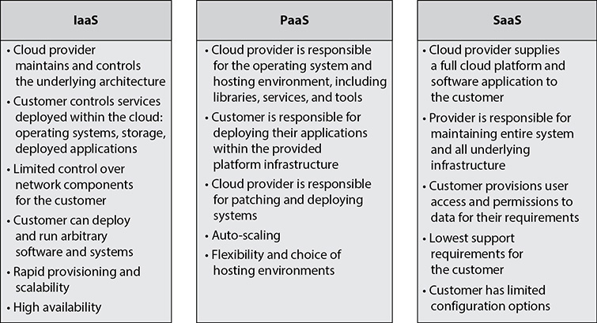
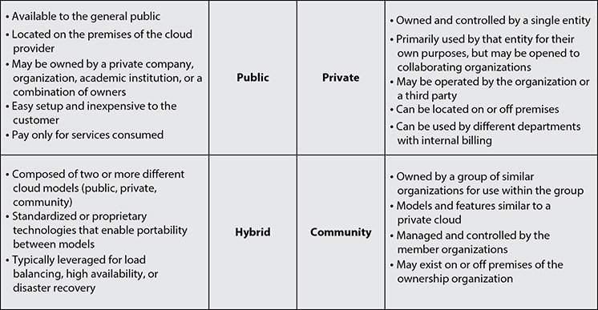
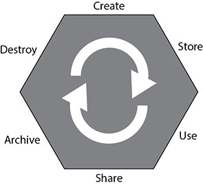

CHAPTER 2
Cloud Concepts, Architecture, and Design
This chapter covers the following topics in Domain 1:
• Cloud computing players and terms
• Cloud computing essential characteristics
• Cloud service categories
• Cloud deployment models
• Cloud shared considerations
• Impact of related technologies
• Security concepts relevant to cloud computing
• Certifications
• Cloud cost-benefit analysis
• Cloud architecture models
The term “cloud” is heard almost everywhere in advertising and popular culture. From television commercials proclaiming “take it to the cloud” to the ubiquitous presence of products such as Apple’s iCloud, Microsoft’s OneDrive, and the plethora of Google apps, the term is one that even the most novice of technology consumers know, even if they have scant knowledge or understanding of what a cloud is or does.
As security professionals working in a cloud environment, much of our knowledge and best practices from traditional data center models still apply, but a thorough understanding of cloud computing concepts and the different types of clouds and cloud services is paramount to successfully implementing and overseeing a security policy and compliance.
The National Institute of Standards and Technology (NIST) of the United States has published Special Publication (SP) 800-145, “The NIST Definition of Cloud Computing,” which gives their official definition of cloud:
Cloud computing is a model for enabling ubiquitous, convenient, on-demand network access to a shared pool of configurable computer resources (e.g., networks, servers, storage, applications, and services) that can be rapidly provisioned and released with minimal management effort or service provider interaction. This cloud model is composed of five essential characteristics, three service models, and four deployment models.
Rather than the classic data center model with server hardware, network appliances, cabling, power units, and environmental controls, cloud computing is predicated on the concept of purchasing “services” to comprise various levels of automation and support based on the needs of the customer at any point in time. This is in contrast to the classic data center model, which requires a customer to purchase and configure systems for their maximum capacity at all times, regardless of need, due to business cycles and changing demands.
Cloud Computing Concepts
Before we dive into more thorough discussions of cloud concepts and capabilities, it is important to lay a strong foundation of cloud computing definitions first via a general overview of the technologies involved. This will form the basis for the rest of this chapter as well as the book as a whole.
Cloud Computing Definitions
The following list presents some introductory definitions for this chapter, based on ISO/IEC 17788, “Cloud Computing—Overview and Vocabulary.” Many more definitions will be given later to build on this definitions primer (see also the glossary in this book).
• Cloud application An application that does not reside or run on a user’s device but rather is accessible via a network.
• Cloud application portability The ability to migrate a cloud application from one cloud provider to another.
• Cloud computing Network-accessible platform that delivers services from a large and scalable pool of systems, rather than dedicated physical hardware and more static configurations.
• Cloud data portability The ability to move data between cloud providers.
• Cloud deployment model How cloud computing is delivered through a set of particular configurations and features of virtual resources. The cloud deployment models are public, private, hybrid, and community.
• Cloud service Capabilities offered via a cloud provider and accessible via a client.
• Cloud service category A group of cloud services that have a common set of features or qualities.
• Community cloud A cloud services model where the tenants are limited to those that have a relationship together with shared requirements, and are maintained or controlled by at least one member of the community.
• Data portability The ability to move data from one system or another without having to re-enter it.
• Hybrid cloud A cloud services model that combines two other types of cloud deployment models.
• Infrastructure as a Service (IaaS) A cloud service category where infrastructure-level services (such as processing, storage, and networking) are provided by a cloud service provider.
• Measured service Cloud services are delivered and billed for in a metered way.
• Multitenancy Having multiple customers and applications running within the same environment, but in a way that they are isolated from each other and oftentimes not visible to each other, yet share the same resources.
• On-demand self-service A cloud customer can provision services in an automatic manner, when needed, with minimal involvement from the cloud provider.
• Platform as a Service (PaaS) A cloud service category where platform services, such as Azure or AWS, are provided to the cloud customer, and the cloud provider is responsible for the system up to the level of the actual application.
• Private cloud Cloud services model where the cloud is owned and controlled by a single entity for their own purposes.
• Public cloud Cloud services model where the cloud is maintained and controlled by the cloud provider, but the services are available to any potential cloud customers.
• Resource pooling The aggregation of resources allocated to cloud customers by the cloud provider.
• Reversibility The ability of a cloud customer to remove all data and applications from a cloud provider and completely remove all data from their environment, along with the ability to move into a new environment with minimal impact to operations.
• Software as a Service (SaaS) A cloud service category in which a full application is provided to the cloud customer, and the cloud provider maintains responsibility for the entire infrastructure, platform, and application.
• Tenant One or more cloud customers sharing access to a pool of resources.
Cloud Computing Roles
These definitions represent the basic and most important roles within a cloud system and the relationships between them, based on ISO/IEC 17788:
• Cloud auditor An auditor that is specifically responsible for conducting audits of cloud systems and cloud applications
• Cloud service broker A partner that serves as an intermediary between a cloud service customer and cloud service provider
• Cloud service customer One that holds a business relationship for services with a cloud service provider
• Cloud service partner One that holds a relationship with either a cloud service provider or a cloud service customer to assist with cloud services and their delivery. ISO/IEC 17788 includes the cloud auditor, cloud service broker, and cloud service customer all under the umbrella of cloud service partners.
• Cloud service provider One that offers cloud services to cloud service customers
• Cloud service user One that interacts with and consumes services offered to a cloud service customer by a cloud service provider
Key Cloud Computing Characteristics
Cloud computing has five essential characteristics. In order for an implementation to be considered a cloud in a true sense, each of these five characteristics must be present and operational:
• On-demand self-service
• Broad network access
• Resource pooling
• Rapid elasticity
• Measured service
Each of these characteristics is discussed in more detail in the following sections.
On-Demand Self-Service
Cloud services can be requested, provisioned, and put into use by the customer through automated means without the need to interact with a person. This is typically offered by the cloud provider through a web portal but can also be provided in some cases through web API calls or other programmatic means. As services are expanded or contracted, billing is adjusted through automatic means.
In the sense of billing, this does not just apply to large companies or firms that have contractual agreements with cloud providers for services and open lines of credit or financing agreements. Even small businesses and individuals can take advantage of the same services through such simple arrangements as having a credit card on file and an awareness of the cloud provider’s terms and charges, and many systems will tell the user at the time of request what the additional and immediate costs will be.
Self-service is an integral component of the “pay-as-you-go” nature of cloud computing and the convergence of computing resources as a utility service.
Broad Network Access
All cloud services and components are accessible over the network and, in most cases, through many different vectors. This ability for heterogeneous access through a variety of clients is a hallmark of cloud computing, where services are provided while staying agnostic to the access methods of the consumers. In the case of cloud computing, services can be accessed typically from either web browsers or thick or thin clients, regardless of whether the consumer is using a mobile device, laptop, or desktop, and either from a corporate network or from a personal device on an open network.
The cloud revolution in computing has occurred concurrently with the mobile computing revolution, making the importance being agnostic concerning the means of access a top priority. Because many companies have begun allowing bring-your-own-device (BYOD) access to their corporate IT systems, it is imperative that any environments they operate within be able to support a wide variety of platforms and software clients.

CAUTION BYOD can be a major headache for IT security professionals. It is often seen by management as a cost-cutting method or a way to appease employees regarding their personal access, but it adds a host of additional concerns to any network or application regarding secure access methods. In a cloud environment, BYOD can potentially be less of an issue, depending on the type of cloud model employed, but it always must be safely monitored. Cloud storage also alleviates the need for users to store their data on their devices; instead, they can access it via the network, thus increasing security by removing data storage physically from the device.
Resource Pooling
One of the most important concepts in cloud computer is resource pooling, or multitenancy. In a cloud environment, regardless of the type of cloud offering, you always will have a mix of applications and systems that coexist within the same set of physical and virtual resources. As cloud customers add to and expand their usage within the cloud, the new resources are dynamically allocated within the cloud, and the customer has no control over (and, really, no need to know) where the actual services are deployed. This aspect of cloud can apply to any type of service deployed within the environment, including processing, memory, network utilization and devices, as well as storage. At the time of provisioning, services can and will be automatically deployed throughout the cloud infrastructure, and mechanisms are in place for locality and other requirements based on the particular needs of the customer and any regulatory or legal requirements that they be physically housed in a particular country or data center. However, these will have been configured within the provisioning system via contract requirements before they are actually requested by the customer, and then they are provisioned within those rules by the system without the customer needing to specify them at that time.
Many corporations have computing needs that are cyclical in nature. With resource pooling and a large sample of different systems that are utilized within the same cloud infrastructure, companies can have the resources they need on their own cycles without having to build out systems to handle the maximum projected load, which means these resources won’t sit unused and idle at other nonpeak times. Significant cost savings can be realized for all customers of the cloud through resource pooling and the economies of scale that it affords.

TIP From my own experience working for an academic institution and in healthcare, the cyclical nature of computing needs is a huge benefit of cloud computing. In both environments, you have defined periods of the year with greatly increased loads and slow periods for most of the rest of the year. Having resources pooled and available when needed is a major plus.
Rapid Elasticity
With cloud computing being decoupled from hardware and with the programmatic provisioning capabilities, services can be rapidly expanded at any time when additional resources are needed. This capability can be provided through the web portal or initiated on behalf of the customer, either in response to an expected or projected increase in demand of services or during such an increase in demand; the decision to change scale is balanced against the funding and capabilities of the customer. If the applications and systems are built in a way where they can be supported, elasticity can be automatically implemented such that the cloud provider through programmatic means and based on predetermined metrics can automatically scale the system by adding additional resources and can bill the customer accordingly.
In a classic data center model, a customer needs to have ready and configured enough computing resources at all times to handle any potential and projected load on their systems. Along with what was previously mentioned under “Resource Pooling,” many companies that have cyclical and defined periods of heavy load can run leaner systems during off-peak times and then scale up, either manually or automatically as the need arises. A prime example of this would be applications that handle healthcare enrollment or university class registrations. In both cases, the systems have very heavy peak use periods and largely sit idle the remainder of the year.
Measured Service
Depending on the type of service and cloud implementation, resources are metered and logged for billing and utilization reporting. This metering can be done in a variety of ways and using different aspects of the system, or even multiple methods. This can include storage, network, memory, processing, the number of nodes or virtual machines, and the number of users. Within the terms of the contract and agreements, these metrics can be used for a variety of uses, such as monitoring and reporting, placing limitations on resource utilization, and setting thresholds for automatic elasticity. These metrics also will be used to some degree in determining the provider’s adherence to the requirements set forth in the service level agreement (SLA).
Many large companies as a typical practice use internal billing of individual systems based on the usage of their data centers and resources. This is especially true with companies that contract IT services to other companies or government agencies. In a classic data center model with physical hardware, this is much more difficult to achieve in a meaningful way. With the metering and reporting metrics that cloud providers are able to offer, this becomes much more simplistic for companies and offers a significantly greater degree of flexibility, with granularity of systems and expansion.
Building-Block Technologies
Regardless of the service category or deployment model used for a cloud implementation, the core components and building blocks are the same. Any cloud implementation at a fundamental level is composed of processor or CPU, memory/RAM, networking, and storage solutions. Depending on the cloud service category, the cloud customer will have varying degrees of control over or responsibility for those building blocks. The next section introduces the three main cloud service categories and goes into detail about what the cloud customer has access to or responsibility for.
Cloud Reference Architecture
A few major components fit together to form the full picture of a cloud architecture and implementation. These components include the activities, roles, and capabilities that go into managing and operating a cloud environment, as well as the actual cloud service categories and cloud deployment models that serve as the basis for delivery of cloud hosting and services. This includes numerous features and components common to all cloud environments, regardless of the service category or deployment model.
Cloud Computing Activities
Different sets of cloud computing activities are performed by the cloud service customer, the cloud service provider, and the cloud service partner, as outlined in ISO/IEC 17789:2014, “Information technology—Cloud computing—Reference architecture.” To keep things simple, we will limit our discussion here to a high-level overview and sampling of the activities, all of which we discuss in greater detail throughout the book.
Cloud Service Customer
The following roles are performed by the cloud service customer:
• Cloud service user Uses the cloud services
• Cloud service administrator Tests cloud services, monitors services, administers security of services, provides usage reports on cloud services, and addresses problem reports
• Cloud service business manager Oversees business and billing administration, purchases the cloud services, and requests audit reports as necessary
• Cloud service integrator Connects and integrates existing systems and services to the cloud
Cloud Service Provider
The following roles are performed by the cloud service provider:
• Cloud service operations manager Prepares systems for the cloud, administers services, monitors services, provides audit data when requested or required, and manages inventory and assets
• Cloud service deployment manager Gathers metrics on cloud services, manages deployment steps and processes, and defines the environment and processes
• Cloud service manager Delivers, provisions, and manages the cloud services
• Cloud service business manager Oversees business plans and customer relationships as well as processes financial transactions
• Customer support and care representative Provides customer service and responds to customer requests
• Inter-cloud provider Responsible for peering with other cloud services and providers as well as overseeing and managing federations and federated services
• Cloud service security and risk manager Manages security and risks and oversees security compliance
• Network provider Responsible for network connectivity, network services delivery, and management of network services
Cloud Service Partner
The following roles are performed by the cloud service partner:
• Cloud service developer Develops cloud components and services and performs the testing and validation of services
• Cloud auditor Performs audits as well as prepares and authors audit reports
• Cloud service broker Obtains new customers, analyzes the marketplace, and secures contracts and agreements
Cloud Service Capabilities
In a discussion of cloud service delivery, three main cloud service capabilities form the basis for the cloud service categories:
• Infrastructure service capability The cloud customer can provision and have substantial configuration control over processing, storage, and network resources.
• Platform service capability The cloud customer can deploy code and applications using programming languages and libraries that are maintained and controlled by the cloud provider.
• Software service capability The cloud customer uses a fully established application provided by the cloud provider, with minimal user configuration options allowed.
Cloud Service Categories
Although many different terms are used for the specific types of cloud service models and offerings, only three main models are universally accepted:
• Infrastructure as a Service (IaaS)
• Platform as a Service (PaaS)
• Software as a Service (SaaS)
A brief overview of these models is given in Figure 2-1, with more information on each model provided in the following sections.

Figure 2-1 An overview of cloud service categories
Infrastructure as a Service (IaaS)
IaaS is the most basic cloud service and the one where the most customization and control is available for the customer. The following is from the NIST SP 800-145 definition for IaaS:
The capability provided to the consumer is to provision processing, storage, networks, and other fundamental computing resources where the consumer is able to deploy and run arbitrary software, which can include operating systems and applications. The consumer does not manage or control the underlying cloud infrastructure but has control over operating systems, storage, and deployed applications; and possibly limited control of selected networking components (e.g., host firewalls).
Key Features and Benefits of IaaS The following are the key features and benefits of IaaS. Some key features overlap with other cloud service models, but others are unique to IaaS.
• Scalability Within an IaaS framework, the system can be rapidly provisioned and expanded as needed, either for predictable events or in response to unexpected demand.
• Cost of ownership of physical hardware Within IaaS, the customer does not need to procure any hardware either for the initial launch and implementation or for future expansion.
• High availability The cloud infrastructure, by definition, meets high availability and redundancy requirements, which would result in additional costs for a customer to meet within their own data center.
• Physical security requirements Because you’re in a cloud environment and don’t have your own data centers, the cloud provider assumes the cost and oversight of the physical security of its data centers.
• Location and access independence The cloud-based infrastructure has no dependence on the physical location of the customer or users of the system, as well as no dependence on specific network locations, applications, or clients to access the system. The only dependency is on the security requirements of the cloud itself and the application settings used.
• Metered usage The customer only pays for the resources they are using and only during the durations of use. There is no need to have large data centers with idle resources for large chunks of time just to cover heavy-load periods.
• Potential for “green” data centers Many customers and companies are interested in having more environmentally friendly data centers that are high efficiency in terms of both power consumption and cooling. Within cloud environments, many providers have implemented “green” data centers that are more cost effective with the economies of scale that would prohibit many customers from having on their own. Although this is not a requirement for a cloud provider, many major providers do market this as a feature, which is of interest to many customers. Even without specific concerns or priorities for environmental reasons, any organization can appreciate the power and cooling demands of a data center and the financial savings realized within a large cloud environment.
Platform as a Service (PaaS)
PaaS allows a customer to fully focus on their core business functions from the software and application levels, either in development or production environments, without having to worry about the resources at the typical data center operations level. The following is from the NIST SP 800-145 definition of PaaS:
The capability provided to the customer is to deploy onto the cloud infrastructure consumer-created or acquired applications created using programming languages, libraries, services, and tools supported by the provider. The customer does not manage or control the underlying cloud infrastructure, including network, servers, operating systems, or storage, but has control over the deployed applications and possibly configuration settings for the application-hosting environment.
Key Features and Benefits of PaaS The following are the key features of the PaaS cloud service model. Although there is some overlap with IaaS and SaaS, each model has its own unique set of features and details.
• Auto-scaling As resources are needed (or not needed), the system can automatically adjust the sizing of the environment to meet demand without interaction from the customer. This is especially important for those systems whose load is cyclical in nature, and it allows an organization to only configure and use what is actually needed so as to minimize idle resources.
• Multiple host environments With the cloud provider responsible for the actual platform, the customer has a wide choice of operating systems and environments. This feature allows software and application developers to test or migrate their systems between different environments to determine the most suitable and efficient platform for their applications to be hosted under without having to spend time configuring and building new systems on physical servers. Because the customer only pays for the resources they are using in the cloud, different platforms can be built and tested without a long-term or expensive commitment by the customer. This also allows a customer evaluating different applications to be more open to underlying operating system requirements.
• Choice of environments Most organizations have a set of standards for what their operations teams will support and offer as far as operating systems and platforms are concerned. This limits the options for application environments and operating system platforms that a customer can consider, both for homegrown and commercial products. The choice of environments not only extends to actual operating systems, but it also allows enormous flexibility as to specific versions and flavors of operating systems, contingent on what the cloud provider offers and supports.
• Flexibility In a traditional data center setting, application developers are constrained by the offerings of the data center and are locked into proprietary systems that make relocation or expansion difficult and expensive. With those layers abstracted in a PaaS model, the developers have enormous flexibility to move between providers and platforms with ease. With many software applications and environments now open source or built by commercial companies to run on a variety of platforms, PaaS offers development teams enormous ease in testing and moving between platforms or even cloud providers.
• Ease of upgrades With the underlying operating systems and platforms being offered by the cloud provider, upgrades and changes are simpler and more efficient than in a traditional data center model, where system administrators need to perform actual upgrades on physical servers, which also means downtime and loss of productivity during upgrades.
• Cost effective Like with other cloud categories, PaaS offers significant cost savings for development teams because only systems that are currently in use incur costs. Additional resources can be added or scaled back as needed during development cycles in a quick and efficient manner.
• Ease of access With cloud services being accessible from the Internet and regardless of access clients, development teams can easily collaborate across national and international boundaries without needing to obtain accounts or access into proprietary corporate data centers. The location and access methods of development teams become irrelevant from a technological perspective, but the Cloud Security Professional needs to be cognizant of any potential contractual or regulatory requirements. For example, with many government contracts, there may be requirements that development teams or the hosting of systems and data be constrained within certain geographic or political borders.

EXAM TIP Although the exam focuses on broad applications and shies away from specific governments and their requirements, it is important to be aware of this potential issue because it definitely comes up in United States government and European Union privacy requirements.
• Licensing In a PaaS environment, the cloud provider is responsible for handling proper licensing of operating systems and platforms, which would normally be incumbent on an organization to ensure compliance. Within a PaaS cloud model, those costs are assumed as part of the metered costs for services and incumbent on the cloud provider to track and coordinate with the vendors.
Software as a Service (SaaS)
SaaS is a fully functioning software application for a customer to use in a turnkey operation, where all the underlying responsibilities and operations for maintaining systems, patches, and operations are abstracted from the customer and are the responsibility of the cloud services provider. The following is from the NIST SP 800-145 definition of SaaS:
The capability provided to the customer is to use the provider’s applications running on a cloud infrastructure. The applications are accessible from various client devices through either a thin client interface, such as a web browser (e.g., web-based email), or a program interface. The consumer does not manage or control the underlying cloud infrastructure, including network, servers, operating systems, storage, or even individual application capabilities, with the possible exception of limited user-specific application settings.
Key Features and Benefits of SaaS The following are the key features and benefits of the SaaS cloud service model. Some are similar to those of IaaS and PaaS, but due to the nature of SaaS being a fully built software platform, certain aspects are unique to SaaS.
• Support costs and efforts In the SaaS service category, the cloud services are solely the responsibility of the cloud provider. Because the customer only licenses access to the software platform and capabilities, the entire underlying system—from network to storage and operating systems, as well as the software and application platforms themselves—is entirely removed from the responsibility of the consumer. Only the availability of the software application is important to the customer, and any responsibility for upgrades, patching, high availability, and operations solely resides with the cloud provider. This enables the customer to focus on productivity and business operations instead of IT operations.
• Reduced overall costs The customer in a SaaS environment is only licensing use of the software. The customer does not need to have systems administrators or security staff on hand, nor do they need to purchase hardware and software, plan for redundancy and disaster recovery, perform security audits on infrastructure, or deal with utility and environmental costs. Apart from licensing access for appropriate resources, features, and user counts from the cloud provider, the only cost concern for the customer is training in the use of the application platform and the device or computer access that their employees or users need to use the system.
• Licensing Similar to PaaS, within a SaaS model the licensing costs are the responsibility of the cloud provider. Whereas PaaS offers the licensing of the operating system and platforms to the cloud provider, SaaS takes it a step further with the software and everything included, leaving the customer to just “lease” licenses as they consume resources within the provided application. This removes the bookkeeping and individual costs of licenses from the customer’s perspective and instead rolls everything into the single cost of utilization of the actual software platform. This model allows the cloud provider, based on the scale of their implementations, to also negotiate far more beneficial bulk licensing savings than a single company or user would ever be able to do on their own, and thus drive lower the total costs to their customers as well.
• Ease of use and administration With a SaaS implementation being a fully featured software installation and product, the cost and efforts of administration are substantially lowered as compared to a PaaS or IaaS model. The customer only bears responsibility for configuring user access and access controls within the system, as well as minimal configurations. The configurations typically allowed within a SaaS system are usually very restricted and may only allow slight tweaks to the user experience, such as default settings or possibly some degree of branding; otherwise, all overhead and operations are held by the cloud provider exclusively.
• Standardization Because SaaS is a fully featured software application, all users will by definition be running the exact same version of the software at all times. A major challenge that many development and implementation teams face relates to patching and versioning, as well as configuration baselines and requirements. Within a SaaS model, because this is all handled by the cloud provider, it is achieved automatically.
Cloud Deployment Models
As shown in Figure 2-2, four main types of cloud deployment and hosting models are in common use, each of which can host any of the three main cloud service models.

Figure 2-2 Cloud deployment models
Public Cloud
A public cloud is just what it sounds like. It is a model that provides cloud services to the general public or any company or organization at large without restriction beyond finances and planning. The following is the NIST SP 800-145 definition:
The cloud infrastructure is provisioned for open use by the general public. It may be owned, managed, and operated by a business, academic, or government organization, or some combination of them. It exists on the premises of the cloud provider.
Key Benefits and Features of the Public Cloud Model The following are key and unique benefits and features of the public cloud model:
• Setup Setup is very easy and inexpensive for the customer. All aspects of infrastructure, including hardware, network, licensing, bandwidth, and operational costs, are controlled and assumed by the provider.
• Scalability Even though scalability is a common feature of all cloud implementations, most public clouds are offered from very large corporations that have very broad and extensive resources and infrastructures. This allows even large implementations the freedom to scale as needed and as budgets allow, without worry of hitting capacity or interfering with other hosted implementations on the same cloud.
• Right-sizing resources Customers only pay for what they use and need at any given point in time. Their sole investment is scoped to their exact needs and can be completely fluid and agile over time based on either expected demand or unplanned demand at any given point in time.
Private Cloud
A private cloud differs from a public cloud in that it is run by and restricted to the organization that it serves. A private cloud model may also be opened up to other entities, expanding outward for developers, employees, contractors, and subcontractors, as well as potential collaborators and other firms that may offer complementary services or subcomponents. The following is the NIST SP 800-145 definition:
The cloud infrastructure is provisioned for exclusive use by a single organization comprising multiple consumers (e.g., business units). It may be owned, managed, and operated by the organization, a third party, or some combination of them, and it may exist on or off premises.
Key Benefits and Features of the Private Cloud Model The following are key benefits and features of the private cloud model and how it differs from a public cloud:
• Ownership retention Because the organization that utilizes the cloud also owns and operates it and controls who has access to it, that organization retains full control over it. This includes control of the underlying hardware and software infrastructures, as well as control throughout the cloud in regard to data policies, access policies, encryption methods, versioning, change control, and governance as a whole. For any organization that has strict policies or regulatory controls and requirements, this model would facilitate easier compliance and verification for auditing purposes versus the more limited controls and views offered via a public cloud. In cases where contracts or regulations stipulate locality and limitations as to where data and systems may reside and operate, a private cloud ensures compliance with requirements beyond just the contractual controls that a public cloud might offer, which also would require extensive reporting and auditing to validate compliance.
• Control over systems With a private cloud, the operations and system parameters of the cloud are solely at the discretion of the controlling organization. Whereas in a public cloud model an organization would be limited to the specific offerings for software and operating system versions, as well as patch and upgrade cycles, a private cloud allows the organization to determine what versions and timelines are offered without the need for contractual negotiations or potentially increased costs if specific versions need to be retained and supported beyond the time horizon that a public cloud is willing to offer.
• Proprietary data and software control Whereas a public cloud requires extensive software and contractual requirements to ensure the segregation and security of hosted systems, a private cloud offers absolute assurance that no other hosted environments can somehow gain access or insight into another hosted environment.
Community Cloud
A community cloud is a collaboration between similar organizations that combine resources to offer a private cloud. It is comparable to a private cloud with the exception of multiple ownership and/or control versus singular ownership of a private cloud. The following is the NIST SP 800-145 definition:
The cloud infrastructure is provisioned for exclusive use by a specific community of consumers from organizations that have shared concerns (e.g., mission, security requirements, policy, and compliance considerations). It may be owned, managed, and operated by one or more of the organizations in the community, a third party, or some combination of them, and may exist on or off premises.
Hybrid Cloud
As the name implies, a hybrid cloud combines the use of both private and public cloud models to fully meet an organization’s needs. The following is the NIST SP 800-145 definition:
The cloud infrastructure is a composition of two or more distinct cloud infrastructures (private, community, or public) that remain unique entities, but are bound together by standardized or proprietary technology that enables data and application portability (e.g., cloud busting for load balancing between clouds).
Key Benefits and Features of the Hybrid Cloud Model Building upon key features and benefits of the public and private cloud models, these are the key features of the hybrid model:
• Split systems for optimization With a hybrid model, a customer has the opportunity and benefit of splitting out their operations between public and private clouds for optimal scaling and cost effectiveness. If desired by the organization, some parts of systems can be maintained internally while leveraging the expansive offerings of public clouds for other systems. This can be done for cost reasons, security concerns, regulatory requirements, or to leverage toolsets and offerings that a public cloud may provide that their private cloud does not.
• Retain critical systems internally When a company has the option to leverage a public cloud and its services, critical data systems can be maintained internally with private data controls and access controls.
• Disaster recovery An organization can leverage a hybrid cloud as a way to maintain systems within its own private cloud but utilize and have at its disposal the resources and options of a public cloud for disaster recovery and redundancy purposes. This would allow an organization to utilize its own private resources but have the ability to migrate systems to a public cloud when needed, without having to incur the costs of a failover site that sits idle except when an emergency arises. Because public cloud systems are only used in the event of a disaster, no costs would be incurred by the organization until such an event occurs. Also, with the organization building and maintaining its own images on its private cloud, these same images could be loaded into the provisioning system of a public cloud and be ready to use if and when required.
• Scalability Along the same lines as disaster recovery usage, an organization can have at the ready a contract with a public cloud provider to handle periods of burst traffic, either forecasted or in reaction to unexpected demand. In this scenario, an organization can keep its systems internal with its private cloud but have the option to scale out to a public cloud on short notice, only incurring costs should the need arise.
Cloud Shared Considerations
Several aspects of cloud computing are universal, regardless of the particular service category or deployment model.
Interoperability
Interoperability is the ease with which one can move or reuse components of an application or service. The underlying platform, operating system, location, API structure, or cloud provider should not be an impediment to moving services easily and efficiently to an alternative solution. An organization that has a high degree of interoperability with its systems is not bound to one cloud provider and can easily move to another if the level of service or price is not suitable. This keeps pressure on cloud providers to offer a high level of services and be competitive with pricing or else risk losing customers to other cloud providers at any time. With customers only incurring costs as they use services, it is even easier to change providers with a high degree of interoperability because long-term contracts are not set. Further, an organization also maintains flexibility to move between different cloud hosting models, such as moving from public to private clouds, and vice versa, as its internal needs or requirements change over time. With an interoperability mandate, an organization can seamlessly move between cloud providers, underlying technologies, and hosting environments, or it can split components apart and host them in different environments without impacting the flow of data or services.
Performance, Availability, and Resiliency
The concepts of performance, availability, and resiliency should be considered de facto aspects of any cloud environment due to the nature of cloud infrastructures and models. Given the size and scale of most cloud implementations, performance should always be second nature to a cloud unless it is incorrectly planned or managed. Resiliency and high availability are also hallmarks of a cloud environment. If any of these areas falls short, then customers will not stay long with a cloud provider and will quickly move to other providers. With proper provisioning and scaling by the cloud provider, performance should always be a top concern and focus. In a virtualized environment, it is easy for a cloud provider with proper management to move virtual machines and services around within its environment to maintain performance and even load. This capability is also what allows a cloud provider to maintain high availability and resiliency within its environment. As with many other key aspects of cloud computing, SLAs will determine and test the desired performance, availability, and resiliency of the cloud services.
Portability
Portability is the key feature that allows data to easily and seamlessly move between different cloud providers. An organization that has its data optimized for portability opens up enormous flexibility to move between different providers and hosting models, and it can leverage the data in a variety of ways. From a cost perspective, portability allows an organization to continually shop for cloud hosting services. Although cost can be a dominant driving factor, an organization may change providers for improved customer service, better feature sets and offerings, or SLA compliance issues. Apart from reasons to shop around for a cloud provider, portability also enables an organization to span its data across multiple cloud hosting arrangements. This can be for disaster recovery reasons, locality diversity, or high availability, for example.
Service Level Agreements (SLAs)
Whereas a contract will spell out the general terms and costs for services, the SLA is where the real meat of the business relationship and concrete requirements come into play. The SLA spells out in clear terms the minimum requirements for uptime, availability, processes, customer service and support, security controls and requirements, auditing and reporting, and potentially many other areas that will define the business relationship and the success of it. Failure to meet the SLA requirements will give the customer either financial benefits or form the basis for contract termination if acceptable performance cannot be rectified on behalf of the cloud provider.
Regulatory Requirements
Regulatory requirements are those imposed on a business and its operations either by law, regulation, policy, or standards and guidelines. These requirements are specific to the locality in which the company or application is based or specific to the nature of the data and transactions conducted. These requirements can carry financial, legal, or even criminal penalties for failure to comply, either willfully or accidently. Sanctions and penalties can apply to the company itself or even in some cases the individuals working for the company and on its behalf, depending on the locality and the nature of the violation. Specific industries often have their own regulations and laws governing them above and beyond general regulations, such as the Health Insurance Portability and Accountability Act (HIPAA) in the U.S. healthcare sector, the Federal Information Security Management Act (FISMA) for U.S. federal agencies and contractors, and the Payment Card Industry Data Security Standard (PCI DSS) for the financial/retail sectors. These are just a few examples of specific regulations that go above and beyond general regulations that apply to all businesses, such as the Sarbanes-Oxley (SOX) Act. The Cloud Security Professional needs to be aware of any and all regulations with which their systems and applications are required to comply; in most cases, failure to understand the requirements or ignorance of the requirements will not shield a company from investigations, penalties, or potential damage to its reputation.
TIP Both the United States and European Union have especially strong and defined policy and security requirements for applications. Being familiar with the EU regulations on data governance and applicable requirements is very important for any professional operating within either jurisdiction.
Security
Security is of course always a paramount concern for any system or application. Within a cloud environment, there can be a lot of management and stakeholder unease with using a newer technology, and many will be uncomfortable with the idea of having corporate and sensitive data not under direct control of internal IT staff and hardware, housed in proprietary data centers. Depending on company policy and any regulatory or contractual requirements, different applications and systems will have their own specific security requirements and controls. Within a cloud environment, this becomes of particular interest because many customers are tenants within the same framework, and the cloud provider needs to ensure each customer that their controls are being met, and done so in a way that the cloud provider can support, with varying requirements. Another challenge exists with large cloud environments that likely have very strong security controls but will not publicly document what these controls are so as not to expose themselves to attacks. This is often mitigated within contract negotiations through nondisclosure agreements and privacy requirements, although this is still not the same level of understanding and information as an organization would have with its own internal and proprietary data centers.
The main way a cloud provider implements security is by setting baselines and minimum standards, while offering a suite of add-ons or extensions to security that typically come with an additional cost. This allows the cloud provider to support a common baseline and offer additional controls on a per-customer basis to those that require or desire them. On the other hand, for many smaller companies and organizations, which would not typically have extensive financial assets and expertise, moving to a major cloud provider may very well offer significantly enhanced security for their applications at a much lower cost than they could get on their own. In effect, they are realizing the economies of scale, and the demands of larger corporations and systems will benefit their own systems for a cheaper cost.
Privacy
Privacy in the cloud environment requires particular care due to the large number of regulatory and legal requirements that can differ greatly by use and location. Adding additional complexity is the fact that laws and regulations may differ based on where the data is stored (data at rest) and where the data is exposed and consumed (data in transit). In cloud environments, especially large public cloud systems, data has the inherent ability to be stored and moved between different locations, from within a country, between countries, and even across continents.
Cloud providers will very often have in place mechanisms to keep systems housed in geographic locations based on a customer’s requirements and regulations, but it is incumbent on the Cloud Security Professional to verify and ensure that these mechanisms are functioning properly. Contractual requirements need to be clearly spelled out between the customer and cloud provider, but strict SLAs and the ability to audit compliance are also important. In particular, European countries have strict privacy regulations that a company must always be cognizant of or else face enormous penalties that many other countries do not have; the ability of the cloud provider to properly enforce location and security requirements will not protect a company from sanctions and penalties for compliance failure because the burden resides fully on the owner of the application and the data held within.
Auditability
Most leading cloud providers supply their customers with a good deal of auditing, including reports and evidence that show user activity, compliance with controls and regulations, systems and processes that run and an explanation of what they do, as well as information, data access, and modification records. Auditability of a cloud environment is an area where the Cloud Security Professional needs to pay particular attention because the customer does not have full control over the environment like they would in a proprietary and traditional data center model. It is up to the cloud provider to expose auditing, logs, and reports to the customer and show diligence and evidence that they are capturing all events within their environment and properly reporting them.
Governance
Governance at its core involves assigning jobs, tasks, roles, and responsibilities and ensuring they are satisfactorily performed. Whether in a traditional data center or a cloud model, governance is mostly the same and undertaken by the same approach, with a bit of added complexity in a cloud environment due to data protection requirements and the role of the cloud provider. Although the cloud environment adds complexity to governance and oversight, it also brings some benefits as well. Most cloud providers offer extensive and regular reporting and metrics, either in real time from their web portals or in the form of regular reporting. These metrics can be tuned to the cloud environment and configured in such a way so as to give an organization greater ease in verifying compliance as opposed to a traditional data center, where reporting and collection mechanisms have to be established and maintained. However, care also needs to be taken with portability and migration between different cloud providers or hosting models to ensure that metrics are equivalent or comparable to be able to maintain a consistent and ongoing governance process.
Maintenance and Versioning
With the different types of cloud service categories, it is important for the contract and SLA to clearly spell out maintenance responsibilities. With a SaaS implementation, the cloud provider is basically responsible for all upgrades, patching, and maintenance, whereas with PaaS and certainly IaaS, some duties belong to the cloud customer while the rest are retained by the cloud provider. Outlining maintenance and testing practices and timelines with the SLA is particularly important for applications that may not always work correctly because of new versions or changes to the underlying system. This requires the cloud provider and cloud customer to work out a balance between the needs of the cloud provider to maintain a uniform environment and the needs of the cloud customer to ensure continuity of operations and system stability. Whenever a system upgrade or maintenance is performed, it is crucial to establish version numbers for platforms and software. With versioning, changes can be tracked and tested, with known versions available to fall back to if necessary due to problems with new versions. There should be an overlap period where a previous version (or versions) is available, which should be spelled out in the SLA.
Reversibility
Reversibility is the ability of a cloud customer to take all their systems and data out of a cloud provider and have assurances from the cloud provider that all the data has been securely and completely removed within an agreed-upon timeline. In most cases this will be done by the cloud customer by first retrieving all their data and processes from the cloud provider, serving notice that all active and available files and systems should be deleted, and then removing all traces from long-term archives or storage at an agreed-upon point in time. Reversibility also encompasses the ability to smoothly transition to a different cloud provider with minimal operational impact.
Impact of Related Technologies
There are many technologies that, while not explicitly part of cloud computing, are widely used within cloud environments. These emerging and related technologies will play increasing roles in cloud computing infrastructure and the common uses of cloud resources by customers.
Artificial Intelligence
Artificial intelligence (AI) allows machines to learn from processing experiences, adjusting to new data inputs and sources, and ultimately performing human-like analyses and adaptations to them. The primary way that AI operates is by consuming very large amounts of data and recognizing and analyzing patterns in the data. There are three main types of artificial intelligence: analytical, human-inspired, and humanized.
Analytical AI is purely cognitive-based. It focuses on the ability of systems to analyze data from past experiences and to extrapolate ways to make better future decisions. It is completely dependent on data and making decisions only from it, with the incorporation of external considerations or factors.
Human-inspired AI expands on the solely cognitive limitation of analytical AI by incorporating emotional intelligence. This adds the consideration of emotional responses and perspectives to decision-making processes. Both the emotional perspective of potential inputs and the predicted emotional response of the outputs are considered.
Humanized AI is the highest order of intelligence and strives to incorporate all aspects of the human experience. Humanized AI incorporates cognitive learning and responses as well as emotional intelligence, but then expands to also add social intelligence. With the addition of social intelligence, the artificial system becomes both aware of itself and self-conscious as it processes interactions.
Artificial intelligence plays a prominent role with cloud computing through big data systems and data mining. It allows systems to adapt to new trends and what they might mean with data inputs and to make informed and properly impacting decisions based on them, especially as users and human interaction are concerned. Of importance to cloud security is the impact on data inputs and their integrity that will directly influence decisions made by AI systems. Without properly secure and applicable inputs, it is impossible to gain a beneficial advantage through their synthesis.
Machine Learning
Machine learning involves using scientific and statistical data models and algorithms to allow machines to adapt to situations and perform functions that they have not been explicitly programmed to perform. Machine learning can use a variety of different input data to make determinations and perform a variety of tasks. This is often performed by using training or “seed” data to begin system optimization, along with the continual ingesting and analysis of data during runtime.
Prime examples of where machine learning is used very prevalently today are with intrusion detection, e-mail filtering, and virus scanning. With all three examples, systems are provided with a set of seed data and patterns to look for, and then continually adapt based on that knowledge and analyzing ongoing trends to perform their tasks. In all three cases, it would be impossible to program a system to adequately protect against any and all threats, especially considering the continual adaptation and evolution of threats. The best systems work by analyzing known patterns and strategies to deal with new threats that follow similar, but not explicitly identical, patterns and methods.
Within cloud computing, machine learning performs very important tasks to allow systems to learn and adapt to computing needs. This especially impacts the scalability and elasticity of systems. While administrators can pre-program specific thresholds of system utilization or load to add or remove resources, more responsive and adaptive systems that can take a broader view of computing demands and appropriately modify resources and scale properly to meet demand will allow companies to have the most cost-effective approach to the consumption of resources.
Blockchain
Blockchain is a list of records that are linked together via cryptography. As the name alludes to, each successive transaction is linked to the previous record in the chain. When a new link is added, information about the previous block, including the timestamp, new transaction data, as well as the cryptographic hash of the previous block, is attached, allowing for the continuation of the chain.
With blockchain, there is not a centralized repository of the chains. They are actually distributed across a number of systems, which can be in the hundreds for small applications, up to enormous systems that contain millions of systems, which is common with cryptocurrencies. This allows for the integrity of the chain and verification that it has not been modified. With the lack of a central repository or authority, there is also not a central means for compromise. An attacker would have to be able to compromise all repositories and modify them in the same manner; otherwise, the lack of integrity would be known to the users. Additionally, with the nature of the chaining of blocks together, and the use of cryptographic hashes to maintain the chain, it is impossible for an attacker to modify any single block of the chain, as it would also cause a downstream change of every other block, thus breaking the integrity of the chain.
Much like cloud environments, there are four types of blockchains: public, private, consortium, and hybrid. With a public blockchain, anyone can access, join, become a validator/repository, and use it for transactions. A private blockchain requires permission to join and utilize, but otherwise functions the same as a public blockchain. A consortium blockchain is semi-private in nature, as it requires permission to join, but can be open to a group of different organizations that are working together or homogenous in nature. A hybrid blockchain draws from the characteristics of the other three types. For example, it can be a combination of public and private, where some pieces are public and others are maintained privately.
With the distributed nature of cloud computing, where resources can be anywhere and the protection of data is paramount, blockchain is likely to continue to grow in use and needs to be understood within the realm of cloud security. Many providers are starting to offer blockchain as a service within their cloud environments as well.
Mobile Device Management
Mobile device management (MDM) is an encompassing term for a suite of policies, technologies, and infrastructure that enables an organization to manage and secure mobile devices that are granted access to its data across a homogenous environment. This is typically accomplished by installing software on a mobile device that allows the IT department to enforce security configurations and policies, regardless of whether the device is owned by the organization or is a private device owned by the user.
MDM allows for “bring your own device” (BYOD) for users and the granting of access to corporate data, such as internal networks, applications, and especially e-mail. Through the use of installed software and policies, the organization can control how the data is accessed and ensure that specific security requirements and configurations are in place. It also allows the organization at any time to remove its data from the device or block access to it, particularly important at times when a user is terminated from their relationship with the organization, or if the device is lost or stolen.
MDM can significantly lower costs to an organization by allowing users to use their own devices, on their own plans, and through whatever provider works best for them. Organizations no longer need to have enterprise data plans or purchase and maintain devices for users, nor do they need to force their users onto specific platforms or ecosystems. This is of particular importance with cloud environments and the nature of allowing broad network access to resources, especially when collaborating with users who may not work specifically for an organization but need to be granted access to its resources and data.
Internet of Things
The concept of the Internet of Things (IoT) refers to the extension of Internet connectivity to devices beyond traditional computing platforms. This can include home appliances, thermostats, sensors, lighting fixtures, and more, and is very common within the scope of “smart home” technologies. While the most rapid expansion of IoT has been in regard to smart home uses, the potential exists to provide virtually any type of device or system with Internet connectivity and remote automation.
While IoT provides enormous capabilities for automation and ease of use, it also poses enormous security and privacy concerns. Each device, once enabled for Internet access, is open to compromise and hacking, just the same as a traditional computer would be. Most of the devices do not have the kind of security software and support infrastructure in place for regular patching and security fixes. This opens them to any compromise that is discovered after they are initially programmed. Any devices, including microphones and cameras, can then be hacked and used within their capabilities or as a platform to attack other devices within what might otherwise be a protected environment.
Cloud providers are begging to offer IoT services within their environments, and many companies that integrate these services into their products highly leverage major cloud platforms to collect and process data from them as well as host the configuration or management of interfaces for consumers.
Containers
A container allows for the rapid deploying of applications throughout cloud environments, especially where they are heterogeneous in nature. A container is a wrapper that contains all of the code, configurations, and libraries needed for an application to operate, packaged inside a single unit. This can then be rapidly deployed throughout host environments without the need for specific server configuration or larger deployments, as only the particular components that are needed for the application to function are deployed, and they are not dependent on underlying operating systems or hardware. With the components all configured within a single wrapper, there is also no longer the need to confirm and validate that potentially large numbers of files have all been successfully deployed, synchronized, and loaded across all systems serving an application, thus increasing integrity and decreasing time and costs.
Many vendors and application providers now offer images where the user needs to only configure to their specific requirements and then deploy into use. This cuts down on deployment and configuration time, as well as provides for easier upgrades and patching. In many instances, only a single configuration or initialization file may need to be copied into an image and deployed into use. Due to the abstraction from underlying systems, containers can be easily deployed between physical servers, virtual servers, cloud environments, or a combination of different systems, while still presenting a uniform experience to users.
Quantum Computing
Quantum computing involves the use of quantum phenomena, such as the interactions between atoms or wave movements to aid in computation. The most prominent potential impact to cloud computing in regard to quantum computing is how it affects cryptography. Many public-key systems today are based on prime number factorization, where the numbers used are so large that it would take an enormous amount of time for computing platforms to break them. However, with the introduction of quantum computing, the potential exists to break these systems efficiently and render them moot, though the practical application does not apply to all cryptographic models. It is a rapidly emerging field that a Cloud Security Professional should stay somewhat abreast of concerning its potential impact to the heavy reliance cloud computing places on cryptography.
Security Concepts Relevant to Cloud Computing
Most security concepts for any system or data center are the same for cloud computing:
• Cryptography
• Access control
• Data and media sanitation
• Network security
• Virtualization security
• Common threats
However, due to the unique nature of the cloud, specific considerations are needed for each concept.
Cryptography
In any environment, data encryption is incredibly important to prevent unauthorized exposure of data, either internally or externally. If a system is compromised by an attack, having the data encrypted on the system will prevent its unauthorized exposure or export, even with the system itself being exposed. This is especially important where there are strict regulations for data security and privacy, such as healthcare, education, tax payment, and financial information.
Encryption
There are many different types and levels of encryption. Within a cloud environment, it is the duty of the Cloud Security Professional to evaluate the needs of the application, the technologies it employs, the types of data it contains, and the regulatory or contractual requirements for its protection and use. Encryption is important for many aspects of a cloud implementation. This includes the storage of data on a system, both when it is being accessed and while it is at rest, as well as the actual transmission of data and transactions between systems or between the system and a consumer. The Cloud Security Professional must ensure that appropriate encryption is selected that will be strong enough to meet regulatory and system requirements, but also efficient and accessible enough for operations to seamlessly work within the application.
Data in Transit
Data in transit is the state of data when it is actually being used by an application and is traversing systems internally or going between the client and the actual application. Whether the data is being transmitted between systems within the cloud or going out to a user’s client, data in transit is when data is most vulnerable to exposure of unauthorized capture. Within a cloud hosting model, the transmission between systems is even more important than with a traditional data center due to multitenancy; the other systems within the same cloud are potential security risks and vulnerable points where data capture could happen successfully.
In order to maintain portability and interoperability, the Cloud Security Professional should make the processes for the encryption of data in transit vendor-neutral in regard to the capabilities or limitations of a specific cloud provider. The Cloud Security Professional should be involved in the planning and design of the system or application from the earliest stages to ensure that everything is built properly from the ground up, and not retrofitted after design or implementation has been completed. Whereas the use of encryption with the operations of the system is crucial during the design phase, the proper management of keys, protocols, and testing/auditing are crucial once a system has been implemented and deployed.
The most common method for data-in-transit encryption is to use the well-known SSL and TLS technologies under HTTPS. With many modern applications utilizing web services as the framework for communications, this has become the prevailing method, which is the same method used by clients and browsers to communicate with servers over the Internet. This method is now being used within cloud environments for server-to-server internal communication as well. Beyond using HTTPS, other common encryption methods for data in transit are VPNs (virtual private networks) and IPSec. These methods can be used by themselves but are most commonly used in parallel to provide the highest level of protection possible.

NOTE Over time, SSL and earlier versions of TLS have been declared unsafe or compromised. This also applies to specific encryption ciphers used by SSL and TLS. As a Cloud Security Professional, it is very important to stay on top of this matter, especially if SSL and TLS are provided on behalf of the cloud provider. Regulatory bodies as well as industry certification groups will often dictate the disabling of ciphers that are no longer considered safe or sufficient, so this is one area to always stay abreast of developments and news.
Data at Rest
Data at rest refers to information stored on a system or device (versus data that is actively being transmitted across a network or between systems). The data can be stored in many different forms to fit within this category. Some examples include databases, file sets, spreadsheets, documents, tapes, archives, and even mobile devices.
Data residing on a system is potentially exposed and vulnerable far longer than short transmission and transaction operations would be, so special care is needed to ensure its protection from unauthorized access. With transaction systems and data in transit, usually a small subset of records or even a single record is transmitted at any time, versus the comprehensive record sets maintained in databases and other file systems.
While encrypting data is central to the confidentiality of any system, the availability and performance of data are equally as important. The Cloud Security Professional must ensure that encryption methods provide high levels of security and protection and do so in a manner that facilitates high performance and system speed. Any use of encryption will cause higher load and processing times, so proper scaling and evaluation of systems are critical when testing deployments and design criteria.
With portability and vendor lock-in considerations, it is important for a Cloud Security Professional to ensure that encryption systems do not effectively cause a system to be bound to a proprietary cloud offering. If a system or application ends up using a proprietary encryption system from a cloud provider, portability will likely be far more difficult and thus tie that customer to that particular cloud provider. With many cloud implementations spanning multiple cloud providers and infrastructures for disaster recovery and continuity planning, having encryption systems that can maintain consistency and performance is important.
Key Management
With any encryption system, a method is needed to properly issue, maintain, and organize keys. If a customer has their own key management systems and procedures, they can better ensure their own data security, as well as prevent being “locked in” with a cloud provider and the systems they provide, which may be proprietary in nature. Beyond the vendor lock-in that can occur with using a key management system from the cloud provider, your keys are also being managed within a system that contains similar keys for other systems. A customer that maintains control of their own key management systems ensures a higher degree of portability and segregation of systems for security reasons.
Two main key management services (KMSs) are commonly used within cloud computing systems: remote and client-side.
Remote Key Management Service A remote key management service is maintained and controlled by the customer at their own location. This offers the highest degree of security for the customer because the keys will be contained under their sole control and outside of the boundaries of the cloud provider. This implementation allows the customer to fully configure and implement their own keys and fully control who can access and generate key pairs. The main drawback to a remote KMS is that connectivity will have to be open and always maintained in order for the systems and applications hosted by the cloud provider to function properly. This introduces the potential for network connectivity latency or periods of downtime, either accidental or by design, which eliminates the high-availability features of a cloud provider and is dependent on the availability of the KMS.
Client-Side Key Management Service Most common with SaaS implementations, client-side KMS is provided by the cloud provider but is hosted and controlled by the customer. This allows for seamless integration with the cloud environment, but also allows complete control to still reside with the customer. The customer is fully responsible for all key generation and maintenance activities.
Access Control
Access control combines the two main concepts of authentication and authorization but adds a crucial third concept of accounting as well. With authentication, a person or system verifies who they are, and with authorization they acquire the appropriate minimum system access rights that they should have based on their role to use the system and consume data. Accounting involves maintaining the logs and records of authentication and authorization activities, and for both, operational and regulatory needs are absolutely crucial.
Access control systems can have a variety of different types of authentication mechanisms that provide increasing levels of security based on the type of data sensitivity. On the low end, this can involve the use of a user ID and password, which everyone is familiar with in regard to typical system access. For higher levels of security, systems can and should use multiple factors of authentication in combination. This will typically be a combination of the classic user ID and password with an additional requirement such as a physical possession. Types of secondary factors typically include biometric tests (fingerprints and retina scans), a physical token device that is plugged into a computer and read by the system, and the use of a mobile device or callback feature, where the user is provided with a code to input in addition to their password for access. There are many other types of potential secondary authentication methods, but the ones just mentioned are the most common. Physical secondary types of authentication can also be layered in combination; for example, the user could have to provide a retina scan as well as a physical token device.
The four main areas of access management concerns are described in the following sections.
Account Provisioning
Before any system access can be granted and roles determined, accounts must be created on the system that will form the basis of access. At this stage, the most crucial aspect for an organization is the validation of users and verification of their credentials to be allowed to acquire accounts for the system. It is incumbent on an organization and their security policies and practices to determine the appropriate level of proof required to verify a new user and issue credentials. This can be based solely on the policies of the organization, or it can include extensive additional processes based on contractual, legal, or regulatory requirements. A prime example would be government contracts, where specific documentation for verification must be submitted to approve authorities outside of the organization, or even to obtain security clearance through separate vetting processes as an additional requirement before account access can be provisioned. The big key for any organization is making a process that is efficient and consistent across the user base so that the account provisioning process can be audited and trusted. While most of the discussion so far has been based on granting and verifying access, it is equally important for an organization to have a well-defined and efficient procedure for removing accounts from the systems at the appropriate time, either for security incident responses purposes, job role changes, or the termination or resignation of employees.
NOTE Some industries, and particularly the academic world, employ federated identity systems to allow people from different organizations to use tokenized credentials to access collaborative systems without needing an actual account on those systems. Depending on the industry you work in (or intend to work in), explorations of open source systems such as SAML would be very valuable.
Directory Services
The backbone of any access management system is the directory server that contains all of the information that applications need to make proper authentication and authorization decisions. Although various solutions for directory services are offered by many different vendors, the core of virtually all of them is the Lightweight Directory Access Protocol (LDAP). LDAP is a highly optimized system of representing data as objects with associated attributes, which can be single- or multi-valued in nature. The data is stored in a hierarchical representation where a DN (distinguished name) acts as the primary key for an object. When users log in to a system, LDAP can provide authentication. Then, depending on the application and its needs, it can provide a variety of information about that user from the attributes associated with their object. This information can be anything, such as the department of an organization they are part of, job titles or codes, flags to determine managers and other special designations, specific system information and roles the user is allowed to access, and essentially any other type of information an organization has determined to be part of their user object. LDAP systems are highly optimized to handle very large numbers of queries of a read-only nature and are able to scale out quickly and efficiently with a model of data replication to servers that can be placed behind load balancers or geographically distributed, depending on the needs and designs of the system implementation.
Administrative and Privileged Access
Although managing all accounts and access is essential to any application and system environment, the management of administrative and privileged accounts is especially important. In this sense, administrative and privileged accounts are those accounts that have access above and beyond what users of the systems would have. These are permissions that allow control and configuration of the software, control over access roles, and control over the underlying operating systems and environments that make up the system. They have the ability to do the greatest damage to the system and expose private data, which could lead to loss of reputation on behalf of the organization or expose the organization to potential regulatory or legal issues.
For the most part, the requirements for account provisioning are the same for this class of users, though certainly it will be a much smaller part of the overall population, typically restricted to very specific groups within the organization where higher scrutiny during the hiring process would have already been undertaken. The crucial part that comes into play with this class of users and elevated privileges is the ability to track and audit what the users are doing with the access. Although many systems come by default with administrative accounts built in that could be used, it is a best practice to disable those accounts and ensure that everyone within this class is using their own personal accounts, and that activities done with those accounts can be logged and tracked. The best way to do this, depending on the capabilities of the system and applications, is to have regular accounts that have the ability to elevate privileges for specific tasks. This must be done in such a way that the elevation and tasks undertaken are logged, preferably in a manner that the user cannot edit or destroy. This can be accomplished through systems that automatically store the logs somewhere that is not accessible by the users of the system. However, with some operating systems and environments, it can be very difficult to keep the separation of logging capabilities and privileged users because the granularity of access and the method for administrative elevation may not be clearly distinct.
Authorization
So far, we have focused on getting users their accounts and the ability to access the system, but the most important aspect beyond just being able to access the system is ensuring that the users have the appropriate roles and privileges within the system. Whereas administrative users will gain access to an entire system, the vast majority of users fall into specific roles that are given access to specific functions or sections within the application or system.
The directory system can and usually does provide the application with the information it needs to determine what features and sections the given user should be granted access to. Whereas authentication is typically a one-time event per session, authorization is an ongoing function that is repeatedly performed within the session. As the user performs transactions and traverses the system, the authorization mechanisms need to continually evaluate their access and determine if they are performing appropriate actions each step of the way. Note that this does not necessarily mean a callback operation to the directory for information about the user because the initial block of attributes could be maintained in state and used throughout the session. The main drawback to doing it this way, though, would be if the permissions of a user were to change during the session, although this could be mitigated by a system that makes the user log back in when changes occur and begin a new session.
Data and Media Sanitation
In a cloud environment, two main issues present themselves when it comes to data and media sanitation. The first is the ability to easily and efficiently move data from one cloud provider to another, to maintain interoperability and reduce vendor lock-in. The other is the ability to ensure that all data has been removed and sanitized when leaving a cloud provider or environment. This involves cleaning and erasing any data in the environment as well as ensuring that if any data is missed or left behind in some capacity, it is not accessible or readable by anyone.
Vendor Lock-in for Data
Vendor lock-in from a general perspective refers to a customer being bound to a particular provider, either based on systems, security requirements, data storage systems, application environments, versions, or any other aspect that limits the customer’s ability to easily change providers. When it comes to data systems, this lock-in can occur in a wide range of ways, either with underlying file or database systems, data structures, encryption systems, or even size and scale of data that another provider may not be able to easily accommodate. A cloud provider may have proprietary systems that scale well and work efficiently, but if they are implemented in a way that makes it difficult for a customer to export data, then portability becomes a major concern and limiting factor.
Apart from just the ability to export data, there is a big concern with the ability to sanitize the data from the cloud provider once it has been exported. With virtual machines, there is the ability to destroy images and sanitize from that perspective, but with data storage systems, if they are implemented in a manner where multiple customers are using them, the data sanitation can become more challenging. Regulatory requirements based on the type and content of data must be consulted to ensure the cloud provider can meet the minimum requirements for sanitation as well as provide ample auditing and evidence of proper sanitation being performed. Because degaussing or destruction of physical media is not possible or practical within a cloud framework, the Cloud Security Professional needs to be aware of what a cloud provider offers before any data is introduced into the provider’s environment. A full understanding of the cloud provider’s capabilities prior to introducing any data, combined with having appropriate SLAs in place to ensure the needs of the customer will be addressed and verified when and if needed, will ensure a sound security policy and confidence among management and auditors.
Data Sanitation
When moving from one system to another—or on a bigger scale, moving from one data center to another (cloud providers included)—it is always imperative that data be properly and completely cleansed from any storage system. In a cloud environment, many of these issues related to data sanitation become even more pressing because the customer does not have access to or control of the physical storage media. In a traditional data center, where the customer owns and possesses the actual hard drives and storage systems, sanitation can be a bit easier because there are more methods available, such as shredding, degaussing, and incineration, all methods not available within a cloud environment, so other means must be the focus.
Overwriting Data overwriting (also known as the “zeroing” of data) is perhaps the most common method used for data sanitation. When files are deleted from a system, the data really remains on the system, even though it is no longer visible to users. Through the use of common and widely available tools, even someone without a huge amount of technical knowledge can recover portions or all of the data that has been erased in this manner, and those highly skilled with these tools can often recover almost anything that is on the media. With data overwriting, the common practice is to write over erased data with either arbitrary data or zero values. This is done multiple times so as to ensure that the data has been overwritten and is no longer available. However, highly sophisticated tools and techniques are sometimes able to recover even data that has gone through multiple steps of overwriting, so this method of data sanitation is not typically used for data that is highly sensitive or classified in nature.
CAUTION Many regulatory requirements stipulate the specific software, overwriting scheme, and the number of times an overwrite must be performed until a system can be considered sanitized. Make sure to verify with any regulatory agencies that you operate within as to their specific requirements, which may go above and beyond company policy. It is imperative to ensure that the cloud provider’s sanitation practices and policies meet the regulatory requirements.
Cryptographic Erasing One very common method for data sanitation is to leverage encryption and the destruction of the keys as a way to ensure data destruction. With systems that have large volumes of data, it can be a time-consuming process to both delete and overwrite data on a system. This is further complicated in a cloud environment with data that can be written over large systems, making it difficult to ensure that all copies have been safely removed and overwritten.
Network Security
Within a cloud environment network, security is essential, as with any system, but due to multitenancy and loss of control of the underlying hardware infrastructure, it is much more crucial in a cloud environment than in a traditional data center. Because the main access point for cloud environments, regardless of the cloud architecture model (IaaS, PaaS, or SaaS), is via the Internet versus any physically connected methods, network security is crucial.
There are two avenues to consider with a cloud environment from a network standpoint. The first is the actual physical layer to the environment. Because the customer is dependent on the cloud provider to ensure the security of the underlying physical network within their environment, the cloud provider needs to impart to the customer through a degree of transparency and contractual assurances that proper security controls are being implemented and audited. The cloud provider, due to portability aspects of cloud computing, has strong motivation to implement meaningful security controls and assurances to the customer, or risk losing business to a competitor quickly. From a logical perspective, network services are a top concern considering all the network traffic from various customers, the protocols being used, and the endpoints of data traversing the network.
Because cloud environments are typically large and have a high number of hosted customers, some aspects of networking become crucial more so than in a traditional data center model. With a traditional data center, the outside border coming in represents the logical segmentation point where the network changes from public to private. Because the cloud has many customers, although the outside border is still a logical segmentation point, there is the added complexity of numerous private networks within the cloud to separate customers from each other. This adds a layer of complexity, both with load and configuration within the cloud, for which the provider must be able to maintain appropriate controls and monitoring to handle. Because any customer can consume enormous resources based on load or attacks, the network segmentation and any limiting factors can shield customers from the predicaments of other customers to maintain the high degree of availability and scalability. When systems grow and scale, especially through automatic means, it is imperative that the virtual network controls and segmentation automatically scale to continually encompass the systems.
Virtualization Security
Virtualization forms the backbone of a cloud infrastructure as well as the basis of scalability, portability, multitenancy, and resource pooling. With the central role virtualization plays in a cloud environment, the security of the underlying hypervisor and virtualization infrastructure is absolutely essential for any Cloud Security Professional. Attacks and vulnerabilities at the hypervisor layer, if successfully exploited by an attacker, expose the entire cloud environment to attacks and threats.
The two types of hypervisors have different security concerns, as detailed next.
Type 1 Hypervisors
A Type 1 hypervisor is tied to the underlying hardware and hosts virtual machines on top of it, and it operates as the sole layer between the hardware (bare metal) and host (virtual servers) layer. A common example would be VMware ESXI.
Due to the proprietary nature of Type 1 hypervisor software and the close intrinsic tie that it has to the underlying hardware, security can be maintained with a very high degree of confidence. Because the vendor controls both the hardware and software, the hypervisor implementation is tightly controlled as to its features and capabilities, making a much leaner and tighter software platform that is more difficult to exploit. With the vendors having full proprietary control of the software, they also control upgrades and patches without extending that capability to anyone else. The tight control and proprietary knowledge make it much more difficult for someone to inject malicious code to gain access and run exploits.
Type 2 Hypervisors
A Type 2 hypervisor is software based. It resides on the host system itself and then orchestrates the hosts under its purview. In this case, the hypervisor is not tied directly to the bare-metal infrastructure and instead runs within an operating system as software. A common example would be VMware Workstation.
With software-based hypervisors, you are dependent on an operating system that is independent of the hardware and virtualization system to operate. The hypervisor must interact with the operating system and rely on it for access to the underlying hardware and system processes. With this dependency, the hypervisor is then vulnerable (to an extent) to any potential flaws and software exploits that can strike the underlying operating system, which could then be used to launch attacks against the hypervisor. When you add in the large degree of flexibility that operating systems offer as a platform, as well as the many flavors of operating systems themselves, the security with Type 2 hypervisors is not as tight and dependable as the native solution Type 1 provides. Tight control, patching, and vigilance of the underlying operating system platform can go a long way toward a much more secure platform.
Container Security
The security of deploying and using containers faces many of the same challenges as virtual servers.
Since many containers are deployed as images from a vendor, it is imperative to verify that the image has not been modified and is from the source that it claims to be. Without this verification, malicious actors could compromise a container before an organization deploys it, granting broad access to data. This typically will be done via checksums or signing by the vendor and verified by the organization once downloaded.
Containers also regularly have updates that address security and bug fixes. An organization must have a plan in place to regularly perform updates, just as they would with security patches in a traditional server or virtual server environment. The organization should be cognizant of the patching cycle of container images from the vendor, as well as ensure they are in the proper communication channels to be alerted to security issues and any emergency patches that may be released.
As with any system or application, it is imperative to secure access to containers and the methods that are used to update and deploy them. If a container is compromised before deployment, the compromise will be propagated throughout the application. Containers can also be potentially compromised after deployment, giving access to at least a subset of data and transactions.
Common Threats
In 2016, the Cloud Security Alliance published “The Treacherous Twelve: Cloud Computing Top Threats in 2016” (https://cloudsecurityalliance.org/group/top-threats/). The well-known threats identified are the top issues the Cloud Security Professional faces:
• Data breaches
• Insufficient identity, credential, and access management
• Insecure interfaces and APIs
• System vulnerabilities
• Account hijacking
• Malicious insiders
• Advanced persistent threats
• Data loss
• Insufficient due diligence
• Abuse and nefarious use of cloud services
• Denial of service
• Shared technologies issues
Data Breaches
A data breach is the unauthorized exposure of sensitive and private data to a party that is not entitled to have it. This is often a top worry of management and security professionals and can occur either by accidental exposure or from a direct attack by someone looking to steal data. With a cloud environment and multitenancy, the threat carries more particular risks because accidental exposure to someone completely external to the company is significantly more possible than in a private data center, although this threat is also magnified more in a public cloud than it would be in a private cloud. Through the use of technologies such as data encryption, a company can significantly reduce the likeliness of a successful data breach, but this also introduces problems with data loss (for example, if the keys are lost). The data breach threat applies to IaaS, PaaS, and SaaS models.
Insufficient Identity, Credential, and Access Management
The probability of a data or system breach increases dramatically for an environment where there are not sufficient controls over the identity and credential systems used for access. This can be in the form of passwords that are not of sufficient strength or are not changed regularly, as well as certificates and other access tokens that are not rotated on a regular schedule. Any systems that use passwords should always employ multifactor authentication, unless a system cannot support it, in which case more stringent password change and quality requirements should be in place. Whether passwords or certificate mechanisms are used, it is imperative to not have them embedded in source code or configuration objects. Any systems within an environment that are a central store of authentication credentials are of extremely high value to an attacker and must be hardened and monitored with more diligence than any other systems. The insufficient identity, credential, and access management threat applies to IaaS, PaaS, and SaaS models.
Insecure Interfaces and APIs
Insecure interfaces or APIs are a particular threat in cloud environments because cloud services—from the underlying infrastructure and administration, up to the functioning of most cloud applications and their design—heavily use APIs and web services to function and operate. These interfaces form the backbone of a cloud environment and deployment. Without them, functions such as auto-scaling and provisioning will not work from the cloud infrastructure aspect, and functions such as authentication, authorization, and the actual operations of the cloud application will not work. Many cloud applications also offer APIs that are exposed for public use or use by other applications in a dependency model, which can be broken and cause reputation harm. To mitigate this threat, both the cloud provider and the application owner need to ensure that tight and strong security controls are in place, including the use of strong encryption and authorization access to APIs and connectivity. The threat of insecure interfaces and APIs applies to IaaS, PaaS, and SaaS models.
System Vulnerabilities
System vulnerabilities are not new or unique to cloud computing in any way. They are vulnerabilities present in the underlying system or operating system that expose it to compromise and put all services on it at risk. System vulnerabilities are obviously a big concern, but there are also established and mature processes for mitigating and minimizing them. With well-developed patching procedures, system monitoring, and regular scanning and testing, system vulnerabilities can be well minimized within the environment. The system vulnerabilities threat applies to IaaS, PaaS, and SaaS models.
Account Hijacking
Account hijacking is neither unique to cloud environments nor new, but the threat in a cloud environment is often more significant than in a traditional data center model. Within a cloud with many hosted environments and customers, and given the large scale and visible nature of many cloud environments, especially public clouds, systems are a particularly ripe target for attackers. If an attacker is able to gain access through either exploiting your own system or another system in the same cloud environment, they can use that exploit to eavesdrop or capture your traffic or use it to attack others in the cloud or the underlying cloud infrastructure. Either occurrence could harm the reputation of the owner of the exploited system. Multifactor authentication methods and strong account provisioning controls and access requirements can minimize the risk. The account hijacking threat applies to IaaS, PaaS, and SaaS models.
Malicious Insiders
The malicious insider threat is centered on an individual who has (or had) appropriate access and uses it for unauthorized purposes to exploit systems or data. This can be related to the confidentiality, integrity, or availability of the systems. Within a cloud environment, the malicious insider threat is further compounded by the employees who work for the cloud provider itself. In a cloud infrastructure, the administrators of the system have access to the hypervisor, web portals, deployment and provision systems, as well as the actual virtual images themselves. This is above and beyond what the customer has access to through their own employees, and it is dependent on the security policies and practices of the cloud provider to mitigate the risk of its own staff. The malicious insider threat applies to IaaS, PaaS, and SaaS models.
Advanced Persistent Threats
Advanced persistent threats are those where attackers target systems with the intent of establishing themselves and stealing data over the long term. Social engineering tactics are often employed by attackers to gain access to a system and establish themselves. They then use methods to blend in with normal traffic and traverse systems. These types of attacks can be very difficult to detect and eliminate, so both advanced technology solutions to detect these attacks as well as a focus on training to minimize problems such as social engineering are common methods used in their prevention and elimination. Advanced persistent threats can be used against IaaS, PaaS, and SaaS models.
Data Loss
Data loss occurs when the data that an organization relies on becomes lost, unavailable, or destroyed when it should not have been. This can happen through lost encryption keys, accidental deletion, or corruption of data. The threat of data loss can be largely mitigated by a robust and regular backup design and schedule, and should always include having the data backed up off-premises from the cloud environment for the most protection. Of course, with any backup system, especially an offsite one, the possibility of a data breach increases because a lot more possible points are exposed for one to occur. The use of encryption and security safeguards for offsite backups will greatly minimize the chances of a data breach happening, though. The data loss threat applies to IaaS, PaaS, and SaaS models.
EXAM TIP Make sure you understand the differences between data breach and data loss, and also know that data loss can happen due to negligence or carelessness, or it can be caused by the intentional acts of an attacker.
Insufficient Due Diligence
When an organization is considering moving its systems and applications from a traditional data center model to a cloud environment, it must evaluate a lot of variables and factors to determine if the move to a cloud system is appropriate or feasible. Without proper and thorough evaluation of its systems, designs, and controls, an organization may unintentionally expose itself to more security risk and vulnerabilities by moving to a cloud environment. For example, if an application or system has been secured using a high degree of reliance on internal network designs or controls within a data center, then moving that application or system to a cloud environment should not be considered until an exhaustive study is conducted of what can be done in the cloud environment to either change the design of the system or put in place similar mitigating controls within the cloud. Moving in a rush to a cloud environment will likely expose a system or application to security threats and vulnerabilities that are new and mitigated against in the current environment. The insufficient due diligence threat applies to IaaS, PaaS, and SaaS models.
Abuse and Nefarious Use of Cloud Services
Cloud environments have vast and enormous resources at their disposal to be able to handle the load and systems of the large number of customers that host applications and systems within their infrastructure. Although this threat isn’t a particular concern to cloud customers other than a possible degradation of services, it is a very valid concern and threat to cloud providers. Using a small or single system as a launching pad for other attacks only provides limited resources to an attacker, but gaining access to a cloud environment and its enormous pool of resources is much more attractive, and as such the cloud environment will be the target of far more sophisticated and coordinated attempts to compromise it. It is incumbent on the cloud provider to ensure this threat is mitigated and to perform active monitoring to detect any instances of it. The abuse of cloud services threat applies to IaaS and PaaS models.
Denial of Service
Denial-of-service (DoS) attacks can come in a variety of forms and methods and are meant to disrupt the normal access and use of an application or system. Typically, a denial-of-service attack will render an application or system inaccessible or significantly degrade service, but in a cloud environment the consumption of a high degree of system or network resources can cause problems for all tenants of the cloud. Although cloud providers typically have a very high level of resources, especially with the large public cloud systems, most also do billing based on the amount of resources a customer consumes. Even if the cloud provider has sufficient resources to handle the DoS attack without catastrophic degradation of services to its customers, this could cause a customer to rack up an enormous bill due to the resources the attack used, thus causing significant financial impact to the customer. The denial-of-service threat applies to IaaS, PaaS, and SaaS models.
Shared Technologies Issues
The shared technologies vulnerability relates to the way cloud providers can accommodate large numbers of customers by leveraging platforms that are consistent and repeatable. This feature drives down costs and enables such attributes as auto-scaling with the cloud environment. However, this also magnifies risk within the environment and requires a very high level of diligence with configuration management, patching, and auditing. Because the entire cloud platform will use a similar or identical set of base images and configurations, a vulnerability due to a misconfiguration or mistake can put the entire environment at risk for all customers hosted within it. Integral parts of the cloud that can affect the entire environment are of particular concern, especially technologies such as the hypervisor. The shared technologies vulnerability applies to IaaS, PaaS, and SaaS models.
Security Considerations for the Different Cloud Categories
Each cloud category will carry some similar as well as some different security considerations due to the differing responsibilities on behalf of the cloud customer and key features of a typical deployment.
Security Concerns for IaaS
IaaS security involves several key and unique security concerns, as detailed in this section.
Multitenancy In the traditional data center model, there is a physical and real separation of an organization’s IT resources from those of any other organization or network. In a cloud environment, resources are hosted within a cloud system that contains multiple other systems, and for very large cloud providers this could be thousands of other systems. Extra consideration and care must be given to a cloud environment because the burden of trust for separation of systems falls on the cloud provider through software controls and contractual requirements. This is true even within a private cloud that only a single corporation has access to, because different departments have systems that require higher security and would not want their systems to be exposed to other departments. For example, the accounting department and software development department should not be able to see the HR systems and data. The use of tools such as encryption becomes far more important than in a physical data center due to this reality; more in-depth analysis of this and other technologies is provided in later sections.
Co-Location With multiple virtual machines hosted by the same physical hardware, the cloud environment introduces attacks between virtual machines as well as attacks from virtual machines to the hypervisor. Of particular concern within a virtual environment is the state of image files for virtual hosts. In a physical environment, if a server is powered off or disabled, it is completely isolated from attacks. However, within a virtual environment, because the images must exist in storage, if the hypervisor is compromised, the images are always open to attacks from malware, corruption, and patching, even when turned off or disabled.
Hypervisor Security and Attacks With traditional data center models, individual servers are utilized that have a close relationship between the hardware and operating system. In a cloud environment, where virtualization is used, the hypervisor layer is introduced between physical hardware and member servers. This also introduces another level of security that cannot be overlooked beyond the physical security and operating system security. If the hypervisor is compromised, all hosted virtual servers are now susceptible and vulnerable as well. This type of access by an attacker would make all hosts under that hypervisor vulnerable, spanning across multiple systems and likely multiple customers.
Network Security With a traditional data center, an organization has the option to deploy extensive tools throughout its network for security monitoring and auditing. This included IDS/IPS systems, packet captures, application firewalls, and the ability to physically separate network switches and firewalls in order to segregate networks. There could be a physical separation between development and production systems, or between zones in the architecture, such as presentation, application, and data. Within a cloud environment, both types of issues require special consideration. Most cloud providers offer a selection of networking tools for their hosted customers, but even the most liberal cloud environment won’t allow network access and monitoring that even come close to approaching what a customer could do in their own data center. With multitenancy and other customers, a cloud provider simply cannot give broad access and insight into a network. Even in a private cloud with different departments, cloud administrators have to limit how much each system can see into the network layer and the level of abstraction that is required for the cloud system. Without a physical separation between systems and zones, software separation and access controls are utilized within a cloud, and it is incumbent on the cloud provider to ensure they are properly configured and tested.
Virtual Machine Attacks Virtual machines are susceptible to all the same traditional security attacks as a physical server. However, if a virtual machine has been compromised, because it is sharing a host with multiple other virtual machines, this raises the possibility of attacks across the virtual machines. It is quite possible that the other virtual machines sharing the same host are from a different company or service, so this adds a layer of abstraction where a customer is solely reliant on the cloud provider to detect and mitigate any such attacks, because each customer will only have insight into their own services within the cloud and will be completely unaware of another compromised host within the cloud.
Virtual Switch Attacks Virtual switches are susceptible to the same degree of attacks, especially at Layer 2, as physical switches. In a cloud environment, because virtual switches are part of the same hosting environment as the other services and virtual machines, they are also susceptible to attacks and vectors if one of those other hosts were to be compromised.
Denial-of-Service (DoS) Attacks Any environment is open to potential DoS attacks, but this also brings some unique challenges and issues in a cloud environment. With multitenancy, a host is open to problems that originate from or target another host on the same cloud host. If a host is suffering a DoS attack externally, it is possible that the resources being consumed by the attack will negatively impact the remaining hosts on the hypervisor, by consuming processor, memory, or network resources. Although hypervisors have the capability to ensure that no single host can consume 100 percent of the resources and thus make the others inaccessible, even without hitting 100 percent, enough resources will be consumed to negatively impact performance and resources. Another potential issue is DoS attacks that originate within the cloud from other hosts as internal attacks.
NOTE Many large applications in a cloud environment use a front-end caching service to increase performance and security. A prime example of this is Akamai. The use of a service like this can mostly eliminate denial-of-service attacks to the actual application from the outside because the traffic would be handled at that layer before it hits the application.
Security Concerns for PaaS
With PaaS being a platform-based rather than infrastructure-based model, there are slightly different security concerns than with IaaS.
System Isolation In a typical PaaS environment, the customer will have very little and highly constrained system-level access, if they have any access at all. If system-level or shell access is granted, it is almost always done without administrative privileges on the virtual machines so as to prevent the customer from making any platform- or infrastructure-level changes. This allows the cloud provider to maintain the level of consistency within their platform necessary for a PaaS implementation as well as to tightly control the security of the environment. If customers are able to change the underlying configurations of the platform, it is significantly more difficult for the cloud provider to perform proper patching and security controls. Allowing customers to change configurations leads to increased support costs as well as the possibility that security incidents from one customer can cross over and impact other customers within the cloud.
User Permissions Any application and system, regardless of hosting model, requires particular and careful attention to user access permissions and proper establishment of roles and groups. The cloud environment is no different from a traditional data center model, but it also adds some additional complexities within a PaaS implementation. As systems are provisioned and expanded, it is crucial for the Cloud Security Professional to ensure that roles and access are properly provisioned at the same time. It is imperative to not only ensure that developers and users have the correct permissions but also that permissions do not expand in scope over time or that inheritance gets muddied. However, when properly configured and monitored, auto-scaling is very possible, and the full benefits of PaaS can be realized in an efficient manner.
User Access Within any application, user access is of utmost importance to business operations and security alike. Users need to be able to gain proper and quick access to systems that they need for work productivity and development, and having a model in place to quickly and correctly provision this access within a very fluid cloud environment is essential. As a first step, the Cloud Security Professional needs to analyze the business requirements for proper user access and develop a model that will work within the cloud environment. In this case, it is not too dissimilar from a traditional data center model, just with the added complexity of how rapidly systems may be created, disabled, or discarded.
Once the business requirements have been completed satisfactorily, the importance shifts to proper implementation of authentication and authorization mechanisms. With the elasticity and auto-scaling features of a cloud environment, proper automation of provisioning of user access management is crucial. However, if the user access models are properly designed and implemented within the cloud environment, this will allow an organization to properly harness all the benefits of the cloud and enable its users to get and use the proper access very quickly as systems are expanded and added.
Malware, Trojans, Backdoors, and Administrative Nightmares Apart from the threat of typical malicious Trojans and malware, many developers often embed backdoors into their systems for easy access for either administrative reasons or as a failsafe to use at times when normal access methods are unavailable or failing. Within a PaaS model, these backdoors can pose special risks because they can expose all systems within the cloud to potential attacks and can also be used to gain access to a virtual machine and use it as a platform to attack the hypervisor layer. As systems expand and auto-scale, the number of places where a potential backdoor can be discovered and exploited expands commensurately with the expansion of the system. Because the auto-scaling process is automated and not actively overseen by security personnel, the number of potential vectors is constantly fluid without the necessary oversight.
Security Concerns for SaaS
Most of the security solutions and problems for SaaS, with it being a fully featured software application platform, fall on the side of the cloud provider, but still very much are issues that the Cloud Security Professional needs to be aware of.
Web Application Security Applications that are hosted within a SaaS model are expected to have high availability and to be “always on.” Because the applications are exposed to the Internet and expected to have broadly available access, this also means they are constantly exposed to attacks and potential exploits. With the expected high availability, any disruption, even a slight one, due to security vulnerabilities and exploits can cause major problems both for the customer, who is dependent on the SaaS application for security, and for the cloud provider, who needs to meet contractual and SLA requirements.
Although all public-facing and Internet-facing applications are exposed to constant scanning and hacking attempts, many SaaS implementations are big, well-known applications that have a visible and large footprint, which makes them lucrative, obvious, and tempting targets for exploit—not to mention the potential data exposure that having a large customer base brings. Within a SaaS implementation, the customer is reliant on the cloud provider for code scanning, security procedures, and maintaining an active security program to catch and block attacks in real time. Because SaaS systems are unique, once a customer decides to use one, they are substantially locked in to that system with productivity dependency and they lose a large degree of flexibility to move to a different cloud provider like someone using IaaS or even PaaS would have in the event of security problems or exploits. SaaS implementations, being in a cloud environment, also might not be watched successfully with the major IDS/IPS systems and scanning tools that do work in a traditional data center model, so extra care in a cloud environment is necessary.
Data Policies A cloud provider that offers a SaaS solution must carefully balance data policies and access that take into account the needs of individual customers but are stringent enough that they do not impede the cloud provider’s ability to offer a broad solution that many customers can leverage. It is essential for the Cloud Security Professional to be able to review existing policies on data access and mesh them with the degree of customizable flexibility that is afforded by the cloud provider. In some instances, the customer policies may need to be altered to some degree to fit within the paradigm of flexibility that is offered by the cloud provider. When an organization is evaluating a SaaS solution, existing policies and any flexibility it may be afforded need to be weighed against what the SaaS provider can support. With multiple customers (and quite possibly a large number of customers) using a SaaS solution, some degree of data-access customization is likely to be permitted, but certainly not to the degree that an organization hosting its own solution would be able to accomplish. It is crucial not only to ensure that customer data will be protected from other customers within the same SaaS implementation but also that a single customer can offer granularity of access within their own organization so that the various departments or audiences of users (for example, HR vs. developers, managers vs. staff) are able to see only the data appropriate for their job role and duties.
Data Protection and Confidentiality With multiple customers in the same SaaS environment, it is incredibly important to keep data segregated and protected, as mentioned previously about data policies. With all data being in one application and one data store, the urgency to protect against SQL injection attacks and cross-site scripting (XSS) becomes even more paramount. If either of these types of vulnerabilities exist within a SaaS implementation, then potentially every customer’s data within the system is exposed and vulnerable. The SaaS provider should build its data models in a way so that the data for each customer is segregated as much as possible, including the use of different data stores for each customer, and very tight access controls are provided. Code scanning and penetration testing to make sure accidental exposure and vulnerabilities do not exist for XSS and SQL injection, as well as other standard attacks to exploit code and expose vulnerabilities, become essential. The Cloud Security Professional must extensively evaluate the security policies and data policies of any SaaS implementation and have tight contractual requirements for application audits and penetration testing, as well as ways for the customer to verify their compliance with the contractual requirements. Regardless of the cloud provider, the customer will ultimately be held responsible for any data breaches or exposure and the resulting negative impact on their reputation or possible legal consequences.
Design Principles of Secure Cloud Computing
Many of the same principles of security from a traditional data center model apply, with some additional considerations and features provided by the cloud. Cloud computing carries with it unique challenges and benefits in the areas of data security and management, business continuity, and disaster recovery planning and strategies. Also, a different approach and considerations are required when undertaking a cost-benefit analysis to determine if the cloud is an appropriate platform for a system or application.
Cloud Secure Data Lifecycle
Data is always a top concern for protection, as previously discussed. It is imperative to have a strong understanding of the data lifecycle in order to properly build and adhere to a security policy, and the proper sequence of steps is also needed.
The data lifecycle is listed next and shown in Figure 2-3.

Figure 2-3 Cloud secure data lifecycle
1. Create Data is either created from scratch, generated, inputted, or modified into a new form and value.
2. Store Data is placed into a storage system. This includes but is not limited to databases, files, and spreadsheets. This is typically done as part of the previous operation or immediately thereafter.
3. Use Data is used by the application or users in some way or modified from its original state.
4. Share Data is used in an application where it is viewable to users, customers, administrators, and so on.
5. Archive Data is removed from active access and use and is placed into a static state where it is preserved longer term.
6. Destroy Data is permanently removed and sanitized through processes previously discussed and is no longer accessible or useable.
Although this represents the sequence of events in the data lifecycle, it is purely a representation of a process and is not indicative of security requirements or policies that are needed at each step of the process, depending on the nature and regulatory requirements of the specific data.
The data lifecycle is covered in much more depth in Chapter 3.
TIP It may seem with modern web applications especially that some of the initial phases can occur simultaneously, but make sure you understand the distinct differences, even if they do seem to be concurrent operations.
Cloud-Based Business Continuity/Disaster Recovery Planning
Business continuity and disaster recovery are similar in nature but also have some distinct differences. Business continuity encompasses the full range of possible service disruptions and how a company can minimize, mitigate, and respond to them and keep business operations running, available, and secure. On a similar note, disaster recovery is also concerned with the continuity of business operations but is focused on events arising from natural disasters or other events that cause an immediate and catastrophic loss of business operations. It involves how to get critical operations back up and running as quickly as possible, either in whole or in part, based on the priorities and expectations of management.
Many customers move to a cloud environment with high availability and redundancy of services in mind, and this plays right into their expectations and plans for business continuity and disaster recovery. Many cloud environments, especially large public clouds, are built and designed to incorporate geographic diversity as well as high availability offerings as a main selling point. While these aspects might make planning a bit easier for the Cloud Security Professional, the same level of diligence and responsibilities exists as with a traditional data center.
With cloud computing and the stress on portability, proper planning and testing of continuity and disaster recovery plans can become more complex. As cloud services move between platforms and cloud providers, keeping up-to-date and valid plans becomes increasingly difficult. What’s more, the responsibility for ensuring availability falls on the cloud provider and its infrastructure.
The main difference with a cloud environment when it comes to continuity and disaster planning is having a full understanding of the roles and responsibilities for the cloud provider and customer. In a multitenancy situation, each customer needs to understand how recovery will proceed in the event of a major situation and how priorities are established for systems. The customer will need to have a full understanding of the cloud provider’s recovery plans and will need to perform regular audits and verifications that the plans are current, acceptable, and realistic for their needs. The customer will have to ensure that the communications plan for the cloud provider in the event of a disaster is responsive and comprehensive. Thus, the customer will need to make an informed decision, based on their business needs and expectations, as to whether they need to make arrangements with another cloud provider either for off-site backups and redundancy or for disaster recovery operations.
The plans for continuity and disaster recovery should be clearly defined and articulated in the SLA between the cloud provider and customer as another facet for performance and acceptable minimum criteria. The SLA should fully document the requirements for redundancy, including the elimination of any single points of failure within the cloud environment. The requirements for backups and the ability to move to another cloud provider if SLA requirements for uptime and disaster recovery are not met should be a key aspect as well. Regular auditing and reporting on adherence to SLA requirements in this area should be clearly defined and timetables established for regular review.
Although planning for all events in any hosting environment is not possible, the key features of a cloud environment can make it very amenable to quick recovery and minimization of disaster scenarios from the onset. With proper auditing, SLAs, and communication plans, management can be assured that recovery will be quick and efficient. With all the other customers also depending on the cloud provider for service, the pressure is on cloud providers with strong industry competition to build very robust and sound systems.
Cost-Benefit Analysis
This chapter has provided a broad overview of cloud computing and the various forms it can take and has introduced the topic of cloud security, which we will discuss in greater depth in the remaining chapters. Any organization considering a move to a cloud environment should undertake a rigorous cost-benefit analysis to determine whether this move is appropriate for its specific systems or applications, weighed against what a cloud can and cannot provide. In the following sections, we discuss several factors that figure prominently into any cost-benefit analysis.
Resource Pooling and Cyclical Demands
As previously mentioned, many organizations have a cyclical nature to their system demands to some extent. With a traditional data center, an organization has to maintain sufficient resources to handle its highest load peaks, which demands much larger upfront hardware and ongoing support costs. A move to a cloud environment would in this case be a benefit to a company in that it would only incur costs as needed, and the initial upfront costs would be far lower without having to build up massive infrastructure from the onset. However, if a company has steady load throughout the year and is not susceptible to large bursts or cycles, then a move to a cloud environment may not yield the same level of benefits.
Data Center Costs vs. Operational Expense Costs
A typical data center setup for an organization carries expenses for facilities, utilities, systems staff, networking, storage, and all the components needed to run an operation from the ground up. In a cloud environment, with those components being largely or wholly the responsibility of the cloud provider, the focus is then shifted to management and oversight, as well as requirements building and auditing. While the higher costs for data centers will be mitigated by a cloud, the customer will spend a far larger amount on operations and oversight in a cloud environment. It is important for any organization thinking about moving to a cloud environment to fully assess the staff and talents it already has and whether they can adapt to the new demands and changing roles in a cloud environment and whether they are willing and able to make those changes, either through training or staff changes.
Focus Change
Moving to a cloud environment brings a large degree of change in focus to an organization. Many organizations are structured in a manner that contains both operations and development staff. With a move to a cloud, the operations side will fundamentally change away from running systems to overseeing them, as discussed previously. An organization will need to evaluate whether it is ready and able to make such a focus shift, as much of its upper management, policies, and organizational structure may well be built around functional focuses. A rush to a cloud environment could disrupt productivity, cause internal fighting, or even result in a significant loss of staff, talent, and corporate knowledge.
Ownership and Control
When an organization owns its data centers and all the hardware, it gets to set all the rules and have full control over everything. In a move to a cloud environment, the organization gives up direct control over operational procedures, system management and maintenance, as well as upgrade plans and environment changes. Although an organization can put in place strong contracts and SLA requirements, it still will not have the degree of flexibility and control it would have in a proprietary data center. The organization will have to gauge the temperament and expectations of its management to determine whether this change is something that will be manageable over time or will cause bigger issues and tension.
Cost Structure
Costs are very predictable in a traditional data center. An organization can appropriate funds for capital expenditures for hardware and infrastructure and then allocate appropriate staffing and resources to maintain the hardware and infrastructure over time. In a cloud environment with metered pricing, costs are realized as resources are added and changed over time. This can cause an unpredictable schedule of costs that may or may not work for a company and the way it handles finances internally. It is an aspect that will have to be carefully evaluated and understood by management. Different billing structures are available, or a middle contractor can be used to provide services that are priced on a longer-term basis but that will vary greatly based on the needs and expectations of the organization.
Identify Trusted Cloud Services
As with any computing platform and infrastructure, there are certification criteria and guidelines that an organization can follow to develop an acceptable level of trust and confidence in the security of a cloud implementation and in the cloud services provider.
Certification Against Criteria
A key aspect of any security program is the ability to audit and verify compliance with security standards, guidelines, and best practices. With cloud computing being so new, even after growing substantially the past few years, there is yet to be an agreed-upon standard for cloud security, so there is a reliance on multiple standards, listed here, that adhere to the applications and systems hosted within a cloud environment rather than to cloud technologies specifically:
• ISO/IEC 27001 and 27001:2013
• NIST SP 800-53
• Payment Card Industry Data Security Standard (PCI DSS)
• SOC 1, SOC 2, and SOC 3
• Common Criteria
• FIPS 140-2
System/Subsystem Product Certifications
The following is an in-depth discussion of those certifications that are common and prevalent with cloud customers and cloud security.
ISO/IEC 27001 and 27001:2013
ISO/IEC 27001 and its more recent update 27001:2013 are widely considered to be the gold standard when it comes to the security of information systems and their data. The 2013 update, like its predecessor, is designed to be platform and vendor neutral and focuses purely on methods and practices for IT security. While it is not focused on or designed toward cloud specifically, its open and flexible nature makes it easy to apply to cloud platforms and a good framework for security compliance and standards.
The latest 2013 revision contains a group of 114 controls organized under the following 14 control domains:
• Information security policies
• Organization of information security
• Human resource security
• Asset management
• Access control
• Cryptography
• Physical and environmental security
• Operations security
• Communications security
• System acquisition, development, and maintenance
• Supplier relationships
• Information security incident management
• Information security aspects of business continuity management
• Compliance
The one main drawback to 27001—and most other security standards, since they were not designed for cloud environments—is that it falls short on being able to confidently span multiple environments and compensate for portability issues and requirements. The frameworks can be very valuable and applicable within a cloud environment of a single provider, but once systems adopt hybrid models or span multiple providers, it gets far trickier when accounting for the differences in providers and their security policies, even if they are similar.
NIST SP 800-53
NIST, as part of the United States government, publishes security standards for systems that are used by the federal government and its contractors, specifically for systems that are not classified under national security. Although NIST Special Publication (SP) 800-53 is written exclusively for those doing business with the U.S. federal government and agencies of the government, it provides a strong security baseline and certification that have value for private corporations as well. The one drawback is that because it is focused exclusively on the U.S. federal government, it is not a document that cloud providers are required to follow and may contain elements that would be difficult for a private organization to comply with.
The latest revision of SP 800-53, Revision 4, was initially released in draft form in 2012. It brought many modern elements and updates into the fold that are pertinent to cloud environments and provide overlap with concepts we previously discussed. Although this is not an exhaustive list of revisions, it highlights those most important to a Cloud Security Professional:
• Insider threats and malicious activity
• Software application security, including web-based applications and APIs
• Social networking
• Mobiles devices
• Cloud computing
• Persistent threats
• Privacy
Also contained in Revision 4 is a matrix mapping similarities and areas of overlap with ISO 27001, which we previously discussed.
NOTE The final public draft of SP 800-53, Revision 5, was released in the spring of 2019, with an expected final publication in the summer of 2019.
Payment Card Industry Data Security Standard (PCI DSS)
The PCI DSS standard was developed by the major credit card labels, and all merchants that accept credit cards under those labels are required to comply with it. PCI DSS applies to the major labels—Visa, MasterCard, Discover, American Express, and JCB—and does not apply to private label and store-brand cards. It is a tiered system of technical and nontechnical requirements based on the number of transactions a vendor processes per year.
The PCI DSS standard is found in a series of 12 compliance requirements:
• Install and maintain a firewall configuration to protect cardholder data.
• Do not use vender-supplied defaults for system passwords and other security parameters.
• Protect stored cardholder data.
• Encrypt transmission of cardholder data across open, public networks.
• Use and regularly update antivirus software on all systems commonly affected by malware.
• Develop and maintain secure systems and applications.
• Restrict access to cardholder data by business need-to-know.
• Assign a unique ID to each person with computer access.
• Restrict physical access to cardholder data.
• Track and monitor all access to network resources and cardholder data.
• Regularly test security systems and processes.
• Maintain a policy that addresses information security.
The vendors strongly enforce PCI DSS compliance, and failure to maintain its controls and standards can lead to penalties for merchants. This can include financial penalties, more stringent requirements for higher tiers, more regular and invasive auditing, or even being denied the ability to take cards under the major label brands and being blocked from their networks.
Although PCI DSS is a proprietary requirement of the card labels, it is often used by many other industries and organizations as a security standard.
SOC 1, SOC 2, and SOC 3
SOC, or Service Organization Control, comprises a series of standards that evaluate and audit the use and control of financial information that companies in the services sector use. SOC was developed and published under the professional standards from SSAE 16 and ISAE 3402.
The SOC 1 reports are done in accordance with the standards set forth in SSAE (Statements on Standards for Attestation Engagements) 16. The SOC 1 report focuses on the kinds of information that would be relevant and pertinent to a financial audit of an organization and its financial statements. This report includes information about the management structure of the organization, the targeted client and customer base, as well as information about the regulations the organization is subjected to and the auditors that verify compliance.
SOC 2 reports expand beyond basic financial audit primers to include five areas. The one most important to the Cloud Security Professional is the security principle (the others are availability, processing integrity, confidentiality, and privacy). The security principle includes seven categories:
• Organization and management
• Communications
• Risk management and design implementation of controls
• Monitoring of controls
• Logical and physical access controls
• System operations
• Change management
Under the published guidelines, any evaluation that is not on the privacy principle must include the security principle as part of the report. Therefore, if the evaluation is on confidentiality, processing integrity, or confidentiality, security must be included.
Common Criteria
Common Criteria is an ISO/IEC international standard for computer security certification. It carries the designation of ISO/IEC 15408. Common Criteria is designed to allow an organization to make substantive claims as to its security practices and results, which are then evaluated for validity to provide assurances to agencies, users, or customers as to its security practices.
The way that Common Criteria works is that an organization can put forth its security functional requirements (SFRs) and security assurance requirements (SARs) via a mechanism that it has employed called a protection profile (PP). Once the PP has been established, vendors can make claims against their products and services that are then tested to see if they meet the claims, thus providing validity and external concurrence to security claims. If the claims are verified, it gives reputation and evidence to their security strength and claims from an independent perspective.
Once an evaluation has been completed, it receives an evaluation assurance level (EAL), which is a numeric score based on the depth and validity of testing against the claims. The possible EAL scores are as follows:
• EAL1 Functionally tested
• EAL2 Structurally tested
• EAL3 Methodically tested and checked
• EAL4 Methodically designed, tested, and reviewed
• EAL5 Semi-formally designed and tested
• EAL6 Semi-formally verified design and tested
• EAL7 Formally verified design and tested
For more in-depth information on Common Criteria, see https://www.commoncriteriaportal.org/.
FIPS 140-2
FIPS (Federal Information Processing Standard) 140-2 is a criterion also put out by NIST of the United States federal government that pertains to accreditation of cryptographic modules. Although this standard was last revised in 2002, before cloud computing technologies came into existence, because it pertains to cryptographic standards and implementations, it is a relevant standard to apply to cloud communications and systems.
The FIPS 140-2 standard defines four levels of security. They are aptly called Levels 1–4, with increasing levels of requirements and scrutiny:
• Level 1 Provides the lowest level of security. The only requirements are based on the cryptographic modules being used, and at least one on the approved list must be present. There are no physical security requirements at Level 1.
• Level 2 Requires role-based authentication where a cryptographic module is used for actual authentication processes. The module must also have mechanisms that show evidence of any attempts to tamper with it.
• Level 3 Requires physical protection methods to ensure a high degree of confidence that any attempts to tamper are evident and detectable. It requires the cryptographic module to not only authenticate the user to the system but also to verify authorization.
• Level 4 Provides the highest level of security and tamper detection. The criteria at Level 4 is that any attempts to tamper will be detected and prevented and that any data that is clear text will be zeroed should a tamper be successful. Level 4–certified modules are very useful in systems that lack physical security protections and need to rely more on data protections.
The FIPS 140-2 standard is divided into 11 sections that define security requirements:
• Cryptographic Module Specification
• Cryptographic Module Ports and Interfaces
• Roles, Services, Authentication
• Finite State Model
• Physical Security
• Operational Environment
• Cryptographic Key Management
• Electromagnetic Interference/Electromagnetic Compatibility (EMI/EMC)
• Self-Tests
• Design Assurance
• Mitigation of Other Attacks
More information about FIPS 140-2 specifications and requirements can be found at http://csrc.nist.gov/publications/fips/fips140-2/fips1402.pdf.
Cloud Architecture Models
Although this material is not part of the official exam guide, it is very valuable information for any security professional to know and understand, and some superficial material from it may appear on the exam. For a professional education, it would be very beneficial to explore these models in more depth because they are commonly used throughout industry and often referenced. In some cases, these models offer their own certifications.
The Cloud Security Alliance (CSA) is the leading professional organization devoted to promoting cloud security best practices and organizing cloud security professionals. The CSA has put out a general cloud enterprise architecture model to help professionals conceptualize the components of a successful cloud implementation. The CSA mission, programs, information, and generalized enterprise architecture can be found at https://cloudsecurityalliance.org.
The four main components to the CSA architecture are discussed next. The Cloud Security Professional should have a good understanding of them from a framework standpoint. We will briefly go over their main points here because they are not an in-depth aspect of the exam. However, future exploration of each component’s website would provide good reference information for any Cloud Security Professional.
Sherwood Applied Business Security Architecture (SABSA)
The SABSA official website can be found at www.sabsa.org. SABSA provides a group of components, listed next, that can be used in part or in whole as an approach to security architecture for any system:
• Business Requirements Engineering Framework (known as Attributes Profiling)
• Risk and Opportunity Management Framework
• Policy Architecture Framework
• Security Services-Oriented Architecture Framework
• Governance Framework
• Security Domain Framework
• Through-Life Security Service Management & Performance Management Framework
IT Infrastructure Library (ITIL)
The ITIL is a collection of papers and concepts that lay out a vision for IT Service Management (ITSM). It is essentially a collection of best practices to give companies of all sizes (but more targeted toward large companies) a framework for providing IT services and user support. ITIL can be found at https://www.axelos.com/best-practice-solutions/itil. Five main publications form the core of ITIL:
• ITIL Service Strategy
• ITIL Service Design
• ITIL Service Transition
• ITIL Service Operation
• ITIL Continual Service Improvement
NOTE Apart from ITIL’s use within the Cloud Security realm, learning ITIL or even getting ITIL certification would be a smart consideration for any security professional. Many organizations in all sectors rely heavily on ITIL principles, and therefore ITIL certification would add a lot to the overall resume of a security professional.
The Open Group Architecture Framework (TOGAF)
TOGAF is meant to be an open enterprise architecture model that offers a high-level design approach. It is intended to provide a common framework for architecture design that teams can leverage for a standardized approach. It helps teams avoid common pitfalls, proprietary lock-in, and communication problems during design and implementation phases as well as throughout the lifecycle of a system. TOGAF, which can be found at www.opengroup.org/subjectareas/enterprise/togaf, addresses the following four critical areas:
• Common language and communications
• Standardizing on open methods and technologies to avoid proprietary lock-in
• Utilizing resources more effectively and efficiently to save money
• Demonstrating return on investment
NIST Cloud Technology Roadmap
The NIST Cloud Technology Roadmap, put out by NIST of the United States federal government in SP 500-293, is a comprehensive guide for U.S. government agencies concerning their use of and migration to cloud computing platforms. It is not a rigid set of requirements for federal agencies or contractors but rather a solid framework to guide IT departments across the government in evaluating cloud technologies, the suitability of these technologies for their IT operations, and security models within a cloud framework to meet federal IT security standards. The roadmap spells out ten steps for the government and contractors to follow in moving resources to cloud platforms. Although the steps are specific to the federal government and its IT requirements, components of these steps and common themes are very important to all Cloud Security Professionals.
Exercise
You have just been hired into the security team for a major corporation and your role is specifically focused on cloud security. Your company is just beginning the evaluation of public cloud platforms to determine the feasibility of moving some major production systems under a cloud environment. You have been asked to develop a plan to evaluate these systems from a security perspective.
1. Based on all you have learned in this chapter, what are the initial steps you will take in this evaluation?
2. How will you advise both management and the operations teams as to what they need to consider and analyze?
3. What will you advise your legal, compliance, and privacy teams on?
Chapter Review
This chapter provided a broad overview of cloud computing, its major aspects and components, as well as the major security issues facing the technology. A Cloud Security Professional needs to have a strong grasp of all these concepts in order to properly advise management on the cost-benefit analysis when considering a move to a cloud platform, and then be able to build a strong and sound security program that is adapted to the cloud platform and chosen provider if the decision to move is made. With a strong grasp of cloud basics, a Cloud Security Professional can provide a sound risk management assessment of an organization’s systems and applications and their appropriateness for the cloud, as well as advise on any shortcomings in the organization’s security model or reliance on its current data center for security prior to migrating to the cloud.
Questions
1. When allowing users to use their own personal devices to access corporate data, which of the following aspects of mobile device management would not be a primary concern of the IT security department?
A. Backups
B. VPN access
C. E-mail security
D. Remote erasure
2. When implementing artificial intelligence into a system, the organization desires it to only use data points to make determinations and not try to make social or emotional decisions. What type of artificial intelligence would be utilized?
A. Human-inspired
B. Humanized
C. Cognitive
D. Analytical
3. What is used by blockchain to connect a new block to the previous block in the same chain to ensure integrity?
A. Timestamp
B. Cryptographic hash
C. Pointer
D. Linkage
4. Which of the following are common threats facing cloud computing platforms? (Choose two.)
A. Denial of service
B. Cryptographic hashing
C. Data breaches
D. Phishing attacks
5. Which of the following standards is commonly applied to cloud computing security?
A. ISO/IEC 27001:2010
B. ISO/IEC 27003:2013
C. ISO/IEC 27013:2000
D. ISO/IEC 27001:2013
6. Which of the following methods is commonly used to ensure that data removed from a cloud system is not recoverable?
A. Deletion
B. Degaussing
C. Overwriting
D. Shredding
7. Which type of hypervisor is a software implementation that runs on top of an operating system rather than tied to the hardware?
A. Type 1
B. Type 2
C. Type 3
D. Type 4
8. Which component of the NIST Cloud Technology Roadmap pertains to the minimum requirements between the cloud provider and cloud customer to meet contractual satisfaction?
A. SLAs
B. Regulatory requirements
C. Governance
D. Auditability
9. Which of the following is a unique benefit of a private cloud versus other models?
A. Scalability
B. Right-sizing resources
C. Disaster recovery
D. Ownership retention
10. Which of the following characteristics of cloud computing would be most attractive to management when looking to save money?
A. On-demand self-service
B. Measured service
C. Resource pooling
D. Rapid elasticity
11. What feature of IaaS would be most beneficial to a new company starting up with more limited capital?
A. Scalability
B. Physical hardware costs
C. Physical security requirements
D. High availability
12. Which common threat, which a customer could be totally unaware of at the time, could lead to a direct financial cost without loss of reputation or privacy exposure?
A. Data breaches
B. Malicious insiders
C. Denial of service
D. Insufficient due diligence
13. What certification would be most appropriate to use for financial statement auditing?
A. NIST SP 800-53
B. FIPS 140-2
C. ISO/IEC 27001
D. SOC 1, SOC 2, and SOC 3
14. Which component of the NIST Cloud Computing Roadmap pertains to the ability to split up applications and reuse components?
A. Portability
B. Interoperability
C. Auditability
D. Availability
15. Which problem would make it least likely for an application or system to be able to easily move to another cloud provider?
A. Data lock-in
B. Operating systems
C. Patching cycles
D. Insecure APIs
16. Which cloud hosting model would be the most appropriate for a company looking to leverage multiple cloud providers for disaster recovery or load bursts?
A. Public cloud
B. Community cloud
C. Private cloud
D. Hybrid cloud
17. Which concept would be most important to consider for data security while it is being used by an application?
A. Malicious insiders
B. Data in transit
C. Data at rest
D. Denial of service
18. Which phase of the cloud data lifecycle typically occurs immediately after or simultaneous with the Create phase?
A. Use
B. Share
C. Store
D. Consume
Questions and Answers
1. When allowing users to use their own personal devices to access corporate data, which of the following aspects of mobile device management would not be a primary concern of the IT security department?
A. Backups
B. VPN access
C. E-mail security
D. Remote erasure
A. The goal and purpose of MDM is to allow for secure access to internal data and applications and to enforce security policies and practices on devices from homogenous ecosystems. The actual data will reside in an authoritative source at the organization itself, with the ability to access, revoke access, and perform remote erasure maintained by the organization. Backups would not be of primary concern because the data is not authoritatively residing on those devices.
2. When implementing artificial intelligence into a system, the organization desires it to only use data points to make determinations and not try to make social or emotional decisions. What type of artificial intelligence would be utilized?
A. Human-inspired
B. Humanized
C. Cognitive
D. Analytical
D. Analytical artificial intelligence only uses cognitive functions to analyze data and inputs and make decisions on how best to proceed with future processes. It does not take into account aspects of emotional or social intelligence at all.
3. What is used by blockchain to connect a new block to the previous block in the same chain to ensure integrity?
A. Timestamp
B. Cryptographic hash
C. Pointer
D. Linkage
B. The cryptographic hash of the previous block in the chain is used by blockchain to maintain the integrity of the chain and verify the proper linking. Once the new block is linked via the hash, it is distributed throughout the validators and can be accessed as needed. If any changes are made to any block in the chain, the entire chain will be rendered compromised and known by any users.
4. Which of the following are common threats facing cloud computing platforms? (Choose two.)
A. Denial of service
B. Cryptographic hashing
C. Data breaches
D. Phishing attacks
A, C. Denial-of-service attacks are used to overwhelm system resources with traffic or malformed requests with the intent to block legitimate and authorized users from the application or data and legitimate business access. Data breaches involve a malicious actor accessing, viewing, copying, or transferring data that they do not have the authorization or a legitimate business use to do so. Cryptographic hashing involves the protection of data and is not a threat facing cloud computing platforms, and phishing attacks can target any application regardless of hosting configurations or technologies used, and is not a cloud-specific attack either.
5. Which of the following standards is commonly applied to cloud computing security?
A. ISO/IEC 27001:2010
B. ISO/IEC 27003:2013
C. ISO/IEC 27013:2000
D. ISO/IEC 27001:2013
D. ISO/IEC 27001:2013 is commonly applied to cloud computing security as a standard and certification system for promoting and continually improving upon the security applied to a system or application. The other certifications listed either are not relevant or are fabricated numbers.
6. Which of the following methods is commonly used to ensure that data removed from a cloud system is not recoverable?
A. Deletion
B. Degaussing
C. Overwriting
D. Shredding
C. Overwriting is a common method used for ensuring removed data is no longer accessible in a cloud environment by replacing valid and sensitive data with random data, null values, or repeating data so that it cannot be read. Simple deleting only removes pointers to data and not the data itself, and degaussing and shredding are physical media destruction techniques that would not be available within a cloud environment.
7. Which type of hypervisor is a software implementation that runs on top of an operating system rather than tied to the hardware?
A. Type 1
B. Type 2
C. Type 3
D. Type 4
B. Type 2 is the type of hypervisor that is hosted on top of an operating system as a software package, rather than connected directly to the underlying physical hardware like a Type 1 hypervisor would be. Type 3 and 4 hypervisors do not exist.
8. Which component of the NIST Cloud Technology Roadmap pertains to the minimum requirements between the cloud provider and cloud customer to meet contractual satisfaction?
A. SLAs
B. Regulatory requirements
C. Governance
D. Auditability
A. SLAs are the criteria to meet minimum requirements for contractual satisfaction between the cloud provider and cloud customer. They document specific requirements and metrics that are required and how they will be measured, as well as specific methods for remedy should they not be met. Regulatory requirements do not dictate specific performance metrics in most cases, and even if they do, the SLA would be the vehicle that would document and establish their performance requirements within the business relationship. Auditability refers to a system or application and the aspects of it that make it subjected to audits and the ease with which they can be done, and is not a framework for specifying contractual performance requirements.
9. Which of the following is a unique benefit of a private cloud versus other models?
A. Scalability
B. Right-sizing resources
C. Disaster recovery
D. Ownership retention
D. Ownership retention is a unique benefit of the private cloud model, where the cloud customer will have significantly more input and control over how the cloud is deployed and managed, versus a public cloud model, where specific customers have very little input or leverage. Scalability is a feature of all cloud models and is not specific to the private cloud model. Right-sizing resources is synonymous with what scalability and elasticity provide and is also not specific to private cloud models. Disaster recovery is a larger concept that applies to any type of hosting, including both traditional data centers and cloud environments, and is not specific to any one model or implementation.
10. Which of the following characteristics of cloud computing would be most attractive to management when looking to save money?
A. On-demand self-service
B. Measured service
C. Resource pooling
D. Rapid elasticity
B. While all aspects could potentially save an organization money, measured service and only paying for what you consume—when you consume it—would be the most attractive option. With a traditional data center, a system must essentially be built to handle peak load, leaving a lot of excess resources at most times. With a cloud environment, resources can be scaled up and added when needed for peak times or cycles, and the customer only incurs those costs while they are actually being used. On-demand self-service refers to the mechanism for scaling a system and provisioning resources, and itself is not a specific way to save money. Resource pooling refers to the overall aggregation of resources between all tenants of a cloud environment and the allocation between them to meet demand. Rapid elasticity is the concept that enables a cloud customer to add resources when needed, but is not the specific cost-saving mechanism that is represented with measured service.
11. What feature of IaaS would be most beneficial to a new company starting up with more limited capital?
A. Scalability
B. Physical hardware costs
C. Physical security requirements
D. High availability
B. Physical hardware costs would be most beneficial to a new company starting out with limited capital because IaaS would remove the need for a large upfront investment in data center expenses. A startup would only need to pay for the specific resources that they need and when they need them, and not the full data center and all the components necessary for it. Physical security requirements are also a component that would make IaaS attractive to a customer, but it would be the same for PaaS and SaaS as well; the physical hardware costs are more directly related to the specific question. Scalability and high availability are not appropriate answers because they might not be specific requirements of an individual customer and would not necessarily factor into the hosting decisions and costs.
12. Which common threat, which a customer could be totally unaware of at the time, could lead to a direct financial cost without loss of reputation or privacy exposure?
A. Data breaches
B. Malicious insiders
C. Denial of service
D. Insufficient due diligence
C. A denial-of-service attack could lead to direct financial costs for a customer without data exposure due to the pricing model of cloud computing measured against consumed resources. With elasticity and auto-scaling, and cloud environments capable of handling very high loads, especially public clouds, a cloud customer may not even be immediately aware of the resources their systems are utilizing at the moment.
13. What certification would be most appropriate to use for financial statement auditing?
A. NIST SP 800-53
B. FIPS 140-2
C. ISO/IEC 27001
D. SOC 1, SOC 2, and SOC 3
D. SOC 1, SOC 2, and SOC 3 pertain to financial statements and auditing, with the latter two extending into broader auditing of systems and practices. The NIST SP 800-53 publication pertains to security and privacy controls for federal government IT systems within the United States, and is not an auditing framework. FIPS 140-2, also from the United States federal government, is a set of standards and accreditation for cryptographic modules, and ISO/IEC 27001 is a general certification and standards publication for IT security.
14. Which component of the NIST Cloud Computing Roadmap pertains to the ability to split up applications and reuse components?
A. Portability
B. Interoperability
C. Auditability
D. Availability
B. Interoperability is the ability to split up and reuse components throughout systems and applications. Portability refers to the ability to move systems and applications easily between different cloud providers. Auditability refers to the ability to audit the controls and practices of a system or application, and availability refers to one of the main three security principles, focused on data and systems being available to authorized users when needed.
15. Which problem would make it least likely for an application or system to be able to easily move to another cloud provider?
A. Data lock-in
B. Operating systems
C. Patching cycles
D. Insecure APIs
A. Data lock-in would make it very difficult for a customer to easily move to another cloud provider, as they would be dependent on proprietary offerings from the cloud provider. Operating systems would not be an impediment because any cloud provider could offer the same operating systems, and patching cycles would fall into the same type of universal offering. Insecure APIs are a major security risk and, if anything, would be a primary reason for a cloud customer to leave for a different cloud provider.
16. Which cloud hosting model would be the most appropriate for a company looking to leverage multiple cloud providers for disaster recovery or load bursts?
A. Public cloud
B. Community cloud
C. Private cloud
D. Hybrid cloud
D. A hybrid cloud would give the most flexibility for moving between different cloud and hosting models, as well as incorporating disaster recovery options. A public cloud and a private cloud are both single models that would not span between multiple cloud providers, and while a community cloud incorporates similar and aligned organizations together, it is likely also a single cloud model. Only a hybrid cloud spans multiple different cloud providers.
17. Which concept would be most important to consider for data security while it is being used by an application?
A. Malicious insiders
B. Data in transit
C. Data at rest
D. Denial of service
B. Data in transit concerns data while it is being used and exchanged during processing. Malicious insiders are not a unique risk to data only while it is being used or transmitted, and denial of service is also not a unique risk to data in any state, but is instead focused on availability. Data at rest would not be dependent on the data actually being used or transmitted, and refers to data that is in an archived or storage states.
18. Which phase of the cloud data lifecycle typically occurs immediately after or simultaneous with the Create phase?
A. Use
B. Share
C. Store
D. Consume
C. The Store phase typically occurs as part of the Create phase or immediately thereafter. The Use and Share phases of data occur after the data has been created and stored in some manner, and there is no dependency or immediate connection between the creating and storing of data to the actual use or sharing of it. The consuming of data is not an actual phase of the data lifecycle and would be synonymous with the Use or Share phase.